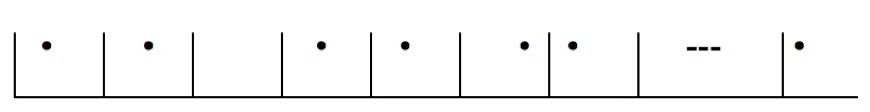
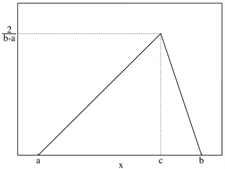

수리 통계 3. 유명한 분포
chapter 1. 확률변수와 확률분포함수
통계적 분포는 모집단의 특성을 수학적으로 모델링하고 해석하는 데 사용되는 중요한 도구이다. 실제 분석에서는 하나의 고정된 분포보다는, 특정한 형태를 유지하면서 하나 이상의 모수를 통해 다양하게 조정 가능한 분포의 집합, 즉 분포의 가족을 다루는 경우가 일반적이다. 이러한 모수는 분포의 위치, 척도, 형태 등의 특성을 조절하는 역할을 하며, 이를 통해 다양한 모집단 상황을 유연하게 설명할 수 있다.
예를 들어, 정규분포는 많은 자연적·사회적 현상을 설명하는 데 자주 사용되는 분포 형태지만, 실제로는 모집단의 평균이나 분산을 정확히 알 수 없는 경우가 많다. 이럴 때는 평균과 분산이라는 두 개의 모수를 갖는 정규분포의 모수적 가족을 고려하게 된다. 즉, 평균이 μ이고 분산이 σ²인 정규분포는 상황에 따라 달라질 수 있는 분포의 집합을 표현하며, 이러한 모수들을 추정하는 과정은 통계적 추론에서 매우 중요한 부분이다.
이와 같은 모수적 접근은 특정한 분포 형태를 가정하고 데이터를 분석하는 데 효과적인 방법이지만, 분포의 형태 자체를 정확히 알 수 없는 경우에는 비모수적 접근이 더 적절할 수 있다. 비모수적 방법은 분포의 형태에 대한 전제가 없거나 느슨하기 때문에, 보다 일반적인 상황에 적용할 수 있는 장점이 있다.
따라서 다양한 확률분포의 성질과 활용법을 이해하는 것은 데이터 분석, 신뢰구간 추정, 가설 검정 등 통계학 전반에서 핵심적인 역할을 하며, 분석의 타당성과 해석력을 높이는 데 기초가 된다.
1. 이산형 균일분포 \(X \sim U(1,K)\)
확률질량함수
\(p_{X}(x) = \frac{1}{K},x = 1,2,...,K\), \(K\)는 1보다 큰 정수이다.
평균과 분산
\[E(X) = \frac{K + 1}{2},V(X) = \frac{(K + 1)(K - 1)}{12}\]
【활용】
유한한 개수의 이산적인 값들이 동일한 확률로 발생하는 경우를 나타내는 분포를 이산균등분포라고 한다. 이 분포에서는 모든 가능한 값이 동일한 가능성으로 발생하며, 보통 정수 구간 [a, b] 내에 정의된 값들에 대해 사용된다.
즉, 확률변수가 [a, b] 구간 내의 정수값만을 취하고, 그 각각이 동일한 확률로 나타날 경우, 해당 분포는 이산균등분포를 따른다고 할 수 있다. 이러한 분포는 특정 값에 대한 편향 없이 균일한 무작위 선택을 표현할 때 유용하게 사용된다. 예를 들어, 공정한 주사위의 눈(1부터 6까지)은 이산균등분포의 대표적인 예이다.
주사위(동전) 게임 : 가장 대표적인 사례로 6면체 주사위를 던졌을 때 나올 수 있는 눈의 수는 1부터 6까지이며 각 눈의 확률은 1/6이다. 동전은 1(앞면), 2(뒷면)이고 각 면의 확률은 1/2이다.
난수 생성 : 컴퓨터 과학에서 난수 생성기는 이산형 균일분포를 활용하여 난수를 생성하는데 특정 범위 내의 정수값을 균일하게 생성하는 데 사용될 수 있다.
설문 조사 결과 분석 : 설문 조사에서 여러 선택지 중에서 랜덤으로 선택하는 경우 이산형 균일분포를 활용하여 각 선택지의 확률을 계산할 수 있다.
게임 이벤트 확률 설정: 컴퓨터 게임이나 보드 게임에서 특정 이벤트가 발생할 확률을 설정할 때 이산형 균일분포를 사용할 수 있다. 예를 들어, 아이템 드롭 확률이나 특정 상황에서의 성공 확률을 균일하게 설정할 수 있다.
임의 샘플링: 임의로 선택된 항목을 조사하거나 분석하는 경우 이산형 균일분포를 사용하여 샘플을 생성할 수 있는데 로또와 같은 추첨 이벤트에서 각 번호의 등장 확률을 나타낼 때 이산형 균일분포를 활용할 수 있다.
2. 초기하분포 \(X \sim HG(N,M,n)\)
초기하 분포는 유한한 모집단에서 복원 없이 표본을 추출하는 상황에서 사용되는 확률분포이다. 모집단의 크기가 N이고, 이 중 관심 있는 그룹(예: 성공 또는 특정 특성 보유 집단)이 M개, 나머지 그룹이 N - M개라고 하자. 이 모집단에서 크기 K의 표본을 무작위로 추출할 때, 관심 그룹에서 선택된 원소의 개수를 확률변수 X라고 정의하면, 이 X는 초기하 분포를 따른다.
초기하 분포는 이항분포와 유사하지만, 표본을 복원하지 않고 추출한다는 점에서 차이가 있다. 이 분포는 모집단이 고정되어 있고, 표본 추출 과정에서 선택된 항목이 다시 모집단으로 돌아가지 않는 경우에 적절하다. 예를 들어, 한 상자에 불량품이 포함된 부품들이 섞여 있을 때, 무작위로 일부를 검사하여 불량품의 개수를 파악하는 상황에 적용할 수 있다.
이 분포는 이산형 확률변수의 대표적인 예 중 하나이며, 품질관리, 검정 문제, 선택 및 선발 과정 등 실제 다양한 분야에서 활용된다.
확률질량함수
\[P(X = x|N,M,K) = \frac{\binom{M}{x}\binom{N - M}{K - x}}{\binom{N}{K}},x = 0,1,\ldots,min(K,M)\]
평균과 분산
\[E(X) = \frac{KM}{N},V(X) = \frac{KM}{N}(\frac{(N - M)(N - K)}{N(N - 1)})\]
【포획-재포획(capture-recapture)】
포획-재포획 문제는 알려지지 않은 모집단의 크기를 추정하기 위한 고전적인 통계 기법이다. 생태학, 인구 추정, 질병 감시 등 다양한 분야에서 활용된다.
지리산에 서식하는 멧돼지의 총 개체 수를 N이라 하자. 먼저 각 지역에서 무작위로 M = 10마리의 멧돼지를 포획한 뒤, 표식을 한 후 다시 자연에 방사한다. 일정 기간이 지난 뒤 동일한 지역에서 다시 K = 20마리를 포획하였고, 그 중 X = 3마리에 표식이 있었다고 하자.
이 상황은 모집단에서 복원 없이 두 번의 표본을 추출하는 과정이므로, 확률변수 X는 초기하 분포(hypergeometric distribution)를 따른다. 이때 N이 주어졌을 때, X = 3이 될 확률은 다음과 같다.
\(P(X = 3 \mid N, M = 10, K = 20) = \frac{\binom{10}{3} \binom{N - 10}{17}}{\binom{N}{20}}\)
이 식은 포획된 20마리 중 표식된 3마리가 나올 확률을 의미하며, 이 확률을 N에 대해 최대화하면 관측된 데이터 하에서 가장 가능성 높은 모집단 크기를 추정할 수 있다. 이때의 N이 바로 최대우도추정값이다.
실제로는 \(N \geq 30\) 을 만족하는 자연수 값들을 대상으로 위 확률식을 계산하여, 그 중 확률이 가장 큰 N을 선택한다. 이를 통해 알려지지 않은 모집단의 규모를 경험적 데이터 기반으로 합리적으로 추정할 수 있다.
【성질】
초기하분포 \(X \sim HG(N,M,K = 1)\)는 베르누이 분포이다.
이항분포는 복원 표본 추출이고 초기하분포는 비복원 추출이다.
모집단 크기 \(N\)이 커지면 초기하분포 \(X \sim HG(N,M,K)\)는 이항분포 \(B(K,p = M/N)\)에 근사한다.
【예제】 Acceptance sampling
한 묶음에 25개의 기계 부품이 포함되어 있으며, 각 부품은 검사 기준을 통과해야 정상으로 간주된다고 가정하자. 10개의 부품을 무작위로 샘플링하여, 모두 정상(불량품이 없음)이라고 판정되었다면, 만약 해당 묶음에 총 6개의 불량품이 포함되어 있다면 이 사건이 발생할 확률은 얼마일까? 초기하분포를 적용하여, \(N = 25,M = 6,K = 10\)일 때, 다음과 같이 계산할 수 있다.
\(P(X = 0) = \frac{\binom{6}{0}\binom{19}{10}}{\binom{25}{10}} = 0.028\). 이는 만약 해당 묶음에 6개 이상의 불량품이 포함되어 있다면, 우리가 관찰한 사건(불량품 없음)이 발생할 확률이 매우 낮다는 것을 보여준다.
【예제】 포획-재포획 문제
초원에 서식하는 얼룩말 수(\(N\))를 추정하려고 한다. \(M = 4\)마리 얼룩말을 잡아 표식을 붙이고 놓아 주었다. 일정 기간이 지난 후 \(K = 3\)마리 얼룩말을 잡아 표식 여부를 확인하였다. 표식이 있는 얼룩말의 수를 확률변수 \(X\)라 정의하자.
표식 있는 얼룩말이 1마리일 확률을 구하라. \(P(X = 1) = \frac{\binom{N}{3}\binom{4}{1}}{\binom{N + 4}{3}}\)
위의 확률을 최대화 하는 N을 구해보자. 지리산 멧돼지 수의 최대우도추정량은 7마리 혹은 8마리이다.
| N | 4 | 5 | 6 | 7 | 8 | 9 1 | 0 |
| P(X=1|HG(N+4, 4,3)) | 0.429 | 0.476 | 0.500 | 0.509 | 0.509 | 0.503 | 0.495 |
3. 베르누이분포 \(X \sim B(1,p)\)
베르누이 시행
베르누이 시행은 통계학에서 널리 사용되는 확률 실험의 한 형태로, 두 가지 가능한 결과 중 하나만이 나타나는 실험을 의미한다. 이 실험은 매우 단순하지만, 다양한 확률 모형의 기본 단위로 사용될 만큼 중요한 개념이다. 대표적인 예로는 동전 던지기(앞면 또는 뒷면), 시험의 합격 여부, 로또 당첨 여부 등이 있다.
베르누이 시행은 다음과 같은 성질을 가진다.
- 결과는 두 가지 가능한 값 중 하나로 나타난다. 일반적으로 이 두 결과는 “성공”과 “실패”로 구분되며, 성공은 1, 실패는 0으로 수치화한다.
- 각 시행은 서로 독립적이다. 이는 한 시행의 결과가 다른 시행에 영향을 미치지 않음을 의미한다. 예를 들어, 여러 번 동전을 던지는 경우 각각의 던지기는 이전 결과와 관계없이 독립적으로 동일한 확률 구조를 갖는다.
- 모든 시행에서 성공 확률이 일정하게 유지된다. 즉, 성공 확률을 p, 실패 확률을 1 - p라고 할 때, 모든 시행에서 이 확률 값은 변하지 않는다.
베르누이 시행은 이항분포, 기하분포, 음이항분포 등의 기반이 되며, 불확실한 사건에 대한 모델링과 해석에 있어 가장 기본적인 확률 구조를 제공한다.
확률질량함수 \[P(X = x|p) = p^{x}(1 - p)^{1 - x},x = 0,1\]
평균과 분산
\[E(X) = p,V(X) = p(1 - p)\]
【활용】
베르누이 분포는 결과가 두 가지(예: 성공과 실패)로 나타나는 확률 실험에서 사용되는 이산형 확률분포로, 이진형 결과를 다루는 문제에 널리 활용된다. 머신러닝에서는 감염 여부, 시험 합격 여부, 이메일의 스팸 여부와 같이 결과가 0 또는 1로 표현되는 이진 분류 문제에서 베르누이 분포를 기반으로 한 확률 모델이 학습에 활용된다.
이항 분포는 베르누이 시행을 독립적으로 n번 반복했을 때, 그 중 성공한 횟수를 확률변수로 정의한 분포이다. 즉, 동일한 성공 확률을 갖는 베르누이 시행이 여러 번 반복되는 상황에서 전체 성공 횟수의 확률분포를 기술한다.
베르누이 시행이 일정한 시간 간격으로 발생하는 경우, 이를 베르누이 프로세스라고 한다. 이 프로세스에서 단위 시간 내 성공(또는 사건 발생)이 일정한 확률로 발생하며, 이러한 시행이 매우 짧은 시간 간격으로 반복되면, 전체 발생 횟수는 포아송 분포로 근사할 수 있다. 이로 인해 베르누이 시행은 대기 행렬 이론, 고객 도착 모델, 네트워크 트래픽 분석 등 시간적 이벤트가 발생하는 다양한 확률 모델링 상황에 활용된다.
【성질】
- 3개 이상의 범주를 갖는 베르누이 분포의 일반 모형은 다항분포이다. \((X_{1},X_{2},\ldots,X_{k}) \sim \text{Multinomial}(n;p_{1},p_{2},\ldots,p_{k})\)
\[P(X_{1} = x_{1},X_{2} = x_{2},\ldots,X_{k} = x_{k}) = \frac{n!}{x_{1}!x_{2}!\cdots x_{k}!}p_{1}^{x_{1}}p_{2}^{x_{2}}\cdots p_{k}^{x_{k}}\]
- \(X \sim B(0.5)\)이면 \(2X - 1\)은 Rademacher 분포(Bootstrapping 기법에 사용되는 변수)를 따른다.
4. 이항분포 \(X \sim B(n,p)\)
이항분포는 동일한 성공 확률을 갖는 독립적인 베르누이 시행을 n번 반복했을 때, 이 중 성공한 횟수를 확률적으로 설명하는 이산형 확률분포이다. 각 시행은 성공(1) 또는 실패(0)의 두 가지 결과만을 가지며, 모든 시행에서 성공 확률 p는 일정하게 유지된다.
확률질량함수 \[P(X = x|n,p) = \binom{n}{x}p^{x}(1 - p)^{n - x},x = 0,1,2,...,n\]
평균과 분산
\[E(X) = np,V(X) = np(1 - p)\]
【활용】
이항분포는 결과가 성공 또는 실패로 구분되는 이진형 사건에 대한 반복 실험에서 성공 횟수를 확률적으로 설명하는 데 적합한 모델로, 다양한 분야에서 실용적으로 활용된다. 주요 활용 사례는 다음과 같다.
마케팅 및 광고 분석: 광고 클릭 여부, 이메일 오픈 여부, 고객 구매 여부 등과 같은 이진 결과를 다루는 마케팅 활동에서 이항분포는 핵심적인 도구이다. 예를 들어, 광고를 본 고객 100명 중 실제로 클릭한 사람이 몇 명인지 분석할 때, 이항분포를 이용하여 클릭률을 예측하고 마케팅 전략의 효과를 평가할 수 있다.
품질 관리: 제조업에서는 제품이 결함이 있는지 없는지와 같은 이진 결과를 기반으로 공정의 품질을 평가한다. 일정 수의 제품을 검사하여 그 중 불량품 수를 기록하고, 이를 이항분포로 모델링함으로써 공정의 안정성과 결함률을 추정할 수 있다.
의료 통계학 및 임상시험: 약물의 효과 여부, 치료 성공률, 질병 발생 여부와 같은 이진 결과를 다루는 임상연구에서도 이항분포는 중요한 역할을 한다. 예를 들어, 200명의 환자에게 신약을 투여하고 그 중 150명이 효과를 보였을 때, 성공률을 분석하거나 두 치료법 간의 효과 차이를 비교할 수 있다.
금융 및 보험: 금융 분야에서는 옵션 가격 모델이나 디폴트 위험 분석, 보험 산업에서는 청구 발생 여부나 보상 지급 비율을 분석할 때 이항분포를 활용한다. 반복되는 사건 중에서 손해가 발생하는 비율을 분석하고 이를 리스크 관리에 반영할 수 있다.
사이버 보안: 침입 탐지 시스템에서는 각각의 접속 시도가 정상 또는 비정상으로 분류되는 이진 결과를 발생시킨다. 이러한 상황에서 이항분포를 활용하여 일정 기간 동안의 침입 가능성을 예측하거나, 보안 시스템의 민감도와 정확도를 평가할 수 있다.
이처럼 이항분포는 실험의 결과가 두 가지 중 하나로 나타나며 독립적으로 반복되는 상황에 매우 적합하며, 다양한 응용 분야에서 데이터 기반 의사결정과 추론에 활용된다.
【성질】
\(X \sim B(n,p)\)이면 \(n - X \sim B(n,1 - p)\)이다.
\(X \sim B(n,p),Y \sim B(m,p)\)이고 서로 독립이면
\(X + Y \sim B(n + m,p)\)이다.
\(X_{i} \sim B\left( n_{i},p \right)\) 서로 독립이면 \(\sum_{i = 1}^{}X_{i} \sim B\left( \sum_{i}^{}n_{i},p \right)\) 이다.
\(X \sim B(n,p)\)는 포아송 분포의 특수한 형태이다. \(B(n,p)\underset{n \rightarrow \infty}{\rightarrow}P(\lambda = np)\)
서로 독립인 \(X \sim B\left( n,p_{1} \right),Y \sim B(m,p_{2})\)의 비 \(log(T) = log(\frac{\frac{X}{n}}{\frac{Y}{m}}) \sim (app)N(\log\left( \frac{p_{1}}{p_{2}} \right),\frac{\frac{1}{p_{1}} - 1}{n} - \frac{\frac{1}{p_{2}} - 1}{m})\) 근사한다.
【예제】
학생들 중 감기 환자가 20%이다. 학생 3명을 임의로 선택하였을 때 확률변수 X을 감기 걸린 학생 수라 정의할 때 X의 확률밀도함수를 구하라. \(X \sim B(n = 3,p = 0.2)\)
| \[X\] | \[P(X = x)\] |
| 0 | 0.512 |
| 1 | 0.384 |
| 2 | 0.096 |
| 3 | 0.008 |
학생을 15명 임의 선택하였을 때 그 중 적어도 한 명이 환자일 확률을 구하라. \(P(X \geq 1) = 1 - P(X = 0) = 0.965\)
【예제】 Group Testing
감염률이 10%인 상황에서 5명을 대상으로 진단검사를 시행할 때, 두 가지 방식인 개별 검사와 그룹 검사의 효율성을 비교할 수 있다.
개별 검사는 5명을 각각 따로 검사하는 방식으로, 어떤 경우에도 정확히 5번의 검사가 필요하다. 반면, 그룹 검사는 5명의 검체를 하나로 묶어 한 번에 검사한 뒤, 결과에 따라 추가 검사를 진행하는 방식이다. 만약 그룹 검사에서 음성이 나오면 1회의 검사로 모든 사람이 음성임을 확인할 수 있지만, 양성이 나오면 5명을 각각 다시 검사해야 하므로 총 6번의 검사가 필요하다.
이때 중요한 판단 기준은 그룹 검사에서 양성이 나올 확률이다. 감염률이 10%일 때, 5명 모두 음성일 확률은 약 59.0%이며, 따라서 그룹 검사에서 양성이 나올 확률은 약 41.0%이다. 이를 바탕으로 그룹 검사 방식의 평균 검사 횟수를 계산하면, 약 3.05회로 나타난다. 이는 개별 검사 방식의 5회보다 적은 횟수이며, 검사 자원의 약 40% 절약 효과를 의미한다.
결론적으로, 감염률이 낮은 상황에서는 그룹 검사가 검사 횟수를 줄일 수 있어 더 효율적인 방법이 된다. 단, 이러한 효율성은 감염률이 높아질수록 감소하며, 감염률이 일정 수준 이상으로 높아지면 오히려 개별 검사가 유리해질 수 있다. 본 사례에서는 감염률이 10%로 낮은 편이기 때문에 그룹 검사가 더 효과적인 방법이라 할 수 있다.
5명 한꺼번에 조사 했을 때 5명 모두 양성이 나올 확률 = \(P\left( X = 0 \middle| X \sim B(5,0.1) \right) = 0.59\)
그러므로 5명 중 적어도 한 명이 양성이어서 5개 모두 검사 회수 기대값은 \(E(X) = 1*0.59 + 6*0.41 = 3.05\)
5명을 개별 검사하면 5회 검사이므로 그룹 검사 방법이 검사 회수 측면에세 더 효과적이다.
5. 포아송분포 \(X \sim Poisson(\lambda)\)
포아송 분포(Poisson distribution)는 단위 시간 또는 단위 공간 내에서 발생하는 사건의 수를 설명하는 데 사용되는 대표적인 이산형 확률분포이다. 이 분포는 사건이 비교적 드물게 발생하지만, 일정한 평균 발생률을 가진다고 가정할 수 있는 현상을 모델링할 때 적합하다.
예를 들어, 일정 시간 동안 버스를 기다리는 상황에서 단위 시간 내 버스가 도착하는 횟수, 또는 은행 창구에 고객이 도착하는 수는 포아송 분포를 따르는 것으로 설명할 수 있다. 이때 핵심 가정 중 하나는 짧은 시간 간격 내에서 사건이 발생할 확률이 그 시간의 길이에 비례한다는 점이다. 즉, 시간이 길어질수록 사건이 발생할 가능성도 커진다는 전제가 성립한다.
포아송 분포는 시간뿐 아니라 공간에 대해서도 적용이 가능하다. 예를 들어, 특정 지역에 떨어지는 폭탄의 수, 또는 호수의 일정 면적 내에 서식하는 물고기의 수 등도 포아송 분포로 모델링할 수 있다. 이러한 경우, 사건들이 서로 독립적으로 발생하고 단위 공간 또는 시간당 평균 발생률이 일정하다고 가정할 수 있다면, 포아송 분포는 현실적인 모델이 될 수 있다.
확률질량함수
\[P(X = x|\lambda) = \frac{e^{- \lambda}\lambda^{x}}{x!},x = 0,1,2,...\]
평균과 분산
\[E(X) = \lambda,V(X) = \lambda\]
【활용】 포아송 분포는 단위 시간 또는 단위 공간 내에서 발생하는 사건의 수를 모델링하는 데 유용한 확률분포로, 다양한 실세계 현상에서 널리 활용된다.
첫째, 도착 패턴 분석에 자주 사용된다. 예를 들어, 일정 시간 동안 도로를 통과하는 차량 수, 고객이 매장에 도착하는 빈도, 콜센터에 걸려오는 전화의 수 등을 포아송 분포로 설명할 수 있다. 이때 각 사건은 독립적으로 발생하며, 단위 시간 내 평균 발생률이 일정하다는 가정이 필요하다.
둘째, 기계 고장 발생과 같은 신뢰성 분석에서도 포아송 분포가 적용된다. 특정 장비가 고장을 일으키는 평균 발생률이 알려져 있다면, 일정 기간 동안 발생하는 고장의 횟수를 확률적으로 예측할 수 있다. 이는 예방 정비, 부품 수급 계획 등 실무적인 의사결정에 활용된다.
셋째, 흡수나 희석 작용이 일어나는 물리적 또는 화학적 과정도 포아송 분포로 모델링할 수 있다. 대표적인 예로는 방사성 물질에서 단위 시간당 방출되는 입자의 수를 들 수 있으며, 이는 시간 간격에 따라 입자 발생 수가 일정한 평균을 가지고 독립적으로 발생하는 것으로 가정할 수 있다.
마지막으로, 머신러닝에서의 이상 탐지에서도 포아송 분포가 활용된다. 정상적인 사건 발생 패턴을 포아송 분포로 모델링한 뒤, 이 분포에서 크게 벗어나는 사건들을 이상(anomaly)으로 간주하여 탐지하는 방식이다. 이 접근은 특히 네트워크 보안, 서버 요청 패턴 분석, 금융 이상 거래 탐지 등에 응용된다.
이처럼 포아송 분포는 발생 빈도가 낮고 독립적인 사건들을 모델링할 수 있는 강력한 도구로, 다양한 분야에서 확률적 사고와 데이터 분석의 기반이 된다.
【포아송 프로세스】
설명한 다섯 가지 조건을 만족하는 확률과정 N_t는 포아송 분포를 따르는 포아송 프로세스라고 한다. 이 프로세스는 일정한 평균 도착률 \(\lambda\) 를 가지고, 시간에 따라 사건이 발생하는 패턴을 모델링하는 데 사용된다. 각 조건의 의미는 다음과 같다.
초기 조건: \(N_0 = 0\) 이다. 시간 0에서 출발하므로, 처음에는 사건이 아무것도 발생하지 않은 상태이다.
독립성: 임의의 시간 s < t에 대해 \(N_s\) 와 \(N_t - N_s\) 는 서로 독립이다. 즉, 분리된 시간 구간에서 발생한 사건 수는 서로 영향을 미치지 않는다.
동일한 분포: 임의의 \(s \geq 0, t \geq 0\) 에 대해 \(N_s\) 와 \(N_{t+s} - N_t\) 는 동일한 분포를 따른다. 이는 도착한 사건 수가 절대적인 시간 위치가 아닌 시간 간격의 길이에만 의존함을 의미한다.
도착 확률: \(\lim_{t \to 0} \frac{P(N_t = 1)}{t} = \lambda\) 이다. 아주 짧은 시간 간격에서 정확히 한 건의 사건이 발생할 확률은 시간 길이에 비례하며, 비례 상수는 \(\lambda\) 이다. 이는 평균적으로 단위 시간당 \(\lambda\) 건의 사건이 발생함을 뜻한다.
동시 도착 없음: \(\lim_{t \to 0} \frac{P(N_t > 1)}{t} = 0\) 이다. 아주 짧은 시간 간격에서는 두 건 이상의 사건이 동시에 발생할 가능성이 없다. 이는 한 순간에 한 사건씩만 발생한다는 조건이다.
포아송 분포 유도
시간이나 면적과 같은 연속적인 영역을 동일한 크기의 n개 구간으로 나눈다고 하자. 이때 각 구간에서 사건이 발생할 확률을 p라고 하면, 사건이 발생하지 않을 확률은 (1 - p)가 된다. 또한 각 구간에서의 사건 발생 여부는 독립적으로 이루어진다고 가정할 수 있다.
이러한 구조에서는 각 구간에서의 사건 발생 여부를 두 가지 결과 중 하나(발생 또는 미발생)로 구분할 수 있으므로, 각 구간은 베르누이 시행과 동일한 형태의 실험이 된다. 즉, 전체 영역은 n회의 독립적인 베르누이 시행으로 구성되며, 특정 시간이나 면적 내에 발생하는 전체 사건 수는 이항 분포를 따르게 된다.
포아송 분포는 이러한 이항 분포에서 \(n \to \infty, p \to 0\), 단 \(np = \lambda\) 가 일정하게 유지되는 극한 과정에서 유도될 수 있다. 이를 통해 드물게 발생하는 사건이 넓은 시간이나 공간에 걸쳐 어떻게 분포하는지를 분석할 수 있다.

\(e^{- \lambda} = \lim_{n \rightarrow \infty}\left( 1 - \frac{\lambda}{n} \right)^{n}\) 사실을 이용하여 다음을 증명할 수 있다. 모수 \((n,p)\)인 이항분포는 모수 \(\lambda = np\)인 포아송 분포에 근사한다.
\[{\lim_{n \rightarrow \infty}\binom{n}{x}p^{x}(1 - p)^{n - x} = \lim_{n \rightarrow \infty}\binom{n}{x}\left( \frac{\lambda}{n} \right)^{x}}\left( 1 - \frac{\lambda}{n} \right)^{n - x}\]
\[= \frac{\lambda^{x}}{x!}\lim_{n \rightarrow \infty}{\left( 1 - \frac{\lambda}{n} \right)^{n}\left( 1 - \frac{\lambda}{n} \right)^{- x}\frac{n(n - 1)(n - x + 1)}{n^{x}}} = \frac{\lambda^{x}}{x!}e^{- \lambda}\]
\[{\because\lim_{n \rightarrow \infty}}{\left( 1 - \frac{\lambda}{n} \right)^{- x}\frac{n(n - 1)(n - x + 1)}{n^{x}} = 1}\]
【성질】
재귀 관계식: \(P(X = x) = \frac{\lambda}{x}P(X = x - 1),x = 1,2,\ldots\)
단위 구간 평균 발생 회수는 구간의 크기에 비례한다. \(X\sim P(\lambda) \leftrightarrow kX\sim P(k\lambda)\)
분포의 가법성: 서로 독립인 포아송 분포 \(X_{i} \sim P(\lambda_{i})\) 합은 포아송 분포 \(\sum_{i}^{n}X_{i} \sim P(\sum_{i}^{n}\lambda_{i})\) 이다. 가법성을 갖는 연속형 확률변수는 감마분포(*)와 정규분포이다.
【예제】 기다리는 시간
대기 중인 사건이 발생하는 경우를 모델링하는 예제로, 평균적으로 3분마다 5통의 전화를 처리하는 전화 교환원을 고려해보자. ① 다음 1분 동안 전화가 전혀 오지 않을 확률은 얼마인가? ② 다음 1분간 최소한 2통 이상의 전화가 올 확률은 얼마인가?
1분당 전화가 걸려오는 횟수를 나타내는 확률변수를 \(X\)라고 정의하면 \(X \sim Poisson(\lambda = 5/3)\)이다.
① \(P(X = 0) = \frac{e^{- 5/3}\left( \frac{5}{3} \right)^{0}}{0!} = 0.189\)
② \(P(X \geq 2) = 1 - P(X = 0) - P(X = 1)\)
【예제】
초원에 서식하는 얼룩말의 수는 1 에이커 당 평균 5마리이고 포아송 분포를 따른다고 하자.
0.5에이커를 무작위 조사하였을 때 얼룩말을 하나도 보지 못할 확률은? \(P(X = 0|X \sim P(\lambda = 2.5)) = 0.6065\)
2에이커를 조사했을 때 13마리 이상 볼 확률은? \(P(X \geq 13|X \sim P(\lambda = 10)) = 0.2084\)
6. 음이항분포 \(X \sim NB(r,p)\)
이항 분포는 고정된 횟수 n의 독립적인 베르누이 시행에서 성공이 몇 번 발생하는지를 나타내는 확률분포이다. 반면, 음이항 분포는 고정된 횟수의 성공 r을 얻기 위해 필요한 전체 시행 수, 또는 그 과정에서 발생하는 실패의 횟수를 세는 데 사용된다.
보다 구체적으로, 음이항 분포는 다음과 같은 상황을 모델링한다. 독립적인 베르누이 시행을 반복하여 수행하면서, 성공 확률이 p로 일정하다고 하자. 이때, r번째 성공이 발생하기 전까지 관찰된 실패의 수를 확률변수 X라고 정의하면, X는 음이항 분포를 따른다. 즉, 이 분포는 “몇 번 실패한 후에 r번째 성공이 발생하는가”에 대한 확률을 나타낸다.
확률질량함수 \[P(X = x|r,p) = \binom{r + x - 1}{x}p^{r}(1 - p)^{x},x = 0,1,2,\ldots\]
평균과 분산 \[E(X) = \frac{r(1 - p)}{p},V(X) = \frac{r(1 - p)}{p^{2}}\]
【활용】
고객 서비스 센터의 상담 전화 모델링: 한 상담원이 고객과의 통화 중 특정 유형의 문제를 해결하는 것을 “성공”이라고 정의할 경우, r번째 문제 해결이 이루어지기 전까지 실패한 시도(즉, 해결되지 않은 통화 수)를 모델링하는 데 음이항 분포를 사용할 수 있다.
생물학 및 의학 연구: 예를 들어 한 환자가 치료에 반응하는 것을 “성공”이라 하면, r번째 성공적인 치료 반응이 나타나기 전까지의 치료 시도 횟수를 분석할 수 있다. 백신 연구에서는 r명의 감염자를 찾기까지 필요한 검사 횟수를 예측하는 데에도 음이항 분포가 적용된다.
마케팅 및 광고 효과 분석: 특정 광고가 소비자로부터 “구매”라는 반응을 유도할 경우, r번째 구매가 발생하기 전까지의 시도 횟수(즉, 광고 노출 수)를 음이항 분포로 모델링할 수 있다.
온라인 시스템 및 네트워크 트래픽 모델링: 웹사이트에서 특정 페이지에 대해 r번째 클릭이 발생하기까지의 총 방문자 수를 예측하거나, 데이터 패킷 전송 과정에서 r번째 성공적인 전송이 이루어지기 전까지 손실된 패킷 수를 분석하는 데 음이항 분포가 활용된다.
이처럼 음이항 분포는 고정된 성공 횟수에 도달하기 전까지의 실패 횟수 또는 총 시도 횟수를 모델링해야 하는 다양한 실제 문제에 적용할 수 있다.
【성질】
독립성: 음이항 분포에서 각 시행은 독립적인 베르누이 시행으로 이루어져 있으며, 이전 시행의 결과가 이후 시행에 영향을 미치지 않는다.
이항 분포는 시행 횟수가 고정되고 성공 횟수가 변하는 모델이며, 음이항 분포는 성공 횟수가 고정되고 시행 횟수가 변하는 모델이다.
합의 분포: 만약 두 개의 독립적인 음이항 분포가 다음과 같이 주어진다면, \(X_{1} \sim NB(r_{1},p),X_{2} \sim NB(r_{2},p)\) 그 합은 다시 음이항 분포를 따른다. \(X_{1} + X_{2} \sim NB(r_{1} + r_{2},p)\) 즉, 동일한 성공 확률 p 을 갖는 두 개의 음이항 분포는 성공 횟수를 합하면 다시 음이항 분포를 형성한다.
포아송 분포와의 관계: 음이항 분포는 포아송 분포의 가변형으로 해석될 수도 있다. 즉, 포아송 분포의 분산이 평균보다 큰 경우, 음이항 분포를 대체 사용할 수 있다. 특히, 감마 분포가 포아송 분포의 평균을 따른다면, 결과적으로 음이항 분포를 얻게 됩니다. 즉, 만약 \(\lambda \sim \text{Gamma}(r,\theta)\) 이고 \(X|\lambda \sim \text{Poisson}(\lambda)\)이면, X 는 음이항 분포를 따른다.
음이항 분포의 포아송 근사: 성공 확률 p 이 작고, 목표 성공 횟수 r 이 크다면 음이항 분포는 포아송 분포에 근사할 수 있습니다. 즉, \(r \rightarrow \infty,p \rightarrow 0\) 그리고 \(\lambda = rp\)을 일정하게 유지하면 \(\text{NB}(r,p) \approx \text{Poisson}(\lambda)\)
【예제】
지질학 연구 결과 석유 탐사 중 석유 발견 확률은 0.2이다.
3번째 탐사에서 처음 석유가 발견될 확률을 계산하라.
7번째 탐사에서 3번째 석유가 발견될 확률을 계산하라.
3번째 석유 발견을 위하여 적어도 20번 이상 탐사할 확률을 계산하라.
석유가 3개 발견될 때까지 시추를 계속하기로 하였다. 몇 번 정도 시추해야 하나?
【풀이】 0.128 / 0.049 / 0.237 / \(\frac{2*0.8}{0.2} = 12\)+3=15번 시추
【예제】 역 이항표본 추출
역 이항 표본 추출(inverse binomial sampling)은 생물학적 개체군을 표본 조사할 때 유용한 방법이다. 이 기법은 특정 특성을 가진 개체의 비율이 p일 때, 해당 특성을 가진 개체를 r개 발견할 때까지 표본을 계속 추출하는 방식이다. 이 과정에서 표본으로 선택된 총 개체 수는 확률변수로 간주되며, 이는 음이항 분포를 따른다.
즉, 고정된 성공 횟수 r에 도달하기 위해 필요한 전체 시도 횟수(표본 수)를 모델링하는 것으로, 실험이나 조사 중 관찰된 특성의 발생률을 추정하거나 샘플 크기를 결정하는 데 활용될 수 있다.
예를 들어, 잠자리 개체군에서 고추 잠자리 비율에 관심이 있다고 가정하자. 우리는 50마리의 고추잠자리를 찾을 때까지 표본을 추출하기로 결정한다. 이때, 최소한 \(N\) 마리의 잠자리를 조사해야 할 확률은 다음과 같이 계산된다.
\(P(X \geq N) = \overset{\infty}{\sum_{x = N}}\binom{x - 1}{49}p^{50}(1 - p)^{x - 50}\). 주어진 \(p\) 와 \(N\) 값에 대해, 위 식을 계산하여 몇 마리의 잠자리를 조사해야 하는지를 추정할 수 있다. (단, 이러한 계산은 복잡할 수 있으며, 재귀 관계를 활용하면 계산 속도를 높일 수 있다.) 이 예제는 음이항 분포가 생물학적 표본 추출에서 어떻게 활용될 수 있는지를 보여준다.
7.기하분포 \(X \sim Geo(p)\)
기하 분포는 가장 단순한 대기 시간 분포 중 하나이며, 음이항 분포의 특수한 경우이다.
확률질량함수 \[P(X = x|p) = p(1 - p)^{x - 1}y = 0,1,2,\ldots\]
평균과 분산 \[E(X) = \frac{1}{p},V(X) = \frac{1 - p}{p^{2}}\]
【활용】
사건 발생까지 걸리는 시간 모델링: 어떤 사건이 확률 p로 발생한다고 할 때, 해당 사건이 처음으로 발생할 때까지 걸리는 시행 횟수를 기하분포로 모델링할 수 있다. 예를 들어, 고장 확률이 p인 기계가 처음 고장날 때까지의 시간을 나타낼 수 있다.
머신러닝에서의 훈련 수렴 시간: 반복적인 학습을 통해 모델이 수렴할 때까지 필요한 시행 횟수를 이산형 대기 시간으로 간주하여 기하분포로 모델링할 수 있다. 이는 최적화 과정에서 특정 조건이 만족되기까지 걸리는 시행 횟수를 예측하는 데 활용된다.
웹 사용자 행동 분석: 사용자가 웹사이트에서 특정 행동(예: 클릭, 구매 등)을 하기까지 걸리는 시간을 기하분포로 모델링함으로써 사용자 행동 패턴을 분석하고, 효과적인 마케팅 전략을 수립할 수 있다.
서비스 대기 시간 분석: 고객이 서비스를 요청한 후 실제로 서비스를 받기까지의 시간을 분석할 때 기하분포가 활용된다. 예를 들어, 콜센터에 전화한 고객이 상담을 받기까지 기다리는 시간은 기하분포적 특성을 가질 수 있다.
마케팅 캠페인 성과 평가: 고객이 첫 구매를 하기까지 걸리는 시간을 기하분포로 모델링하면 마케팅 활동의 효율성을 분석할 수 있다. 이를 통해 고객 유치 속도를 추정하고, 마케팅 자원 배분의 최적화를 도모할 수 있다.
【성질】
기하분포 \(X\sim G(p)\)는 음이항 분포 \(X\sim NB(r = 1,p)\)의 특수한 분포이다.
독립인 \(r\)개 기하분포 \(X_{i} \sim G(p)\)의 합 \(\sum_{k = 1}^{r}X_{i}\) 확률변수는 음이항분포 \(NB(r,p)\)를 따른다.
\(X_{i} \sim G\left( p_{i} \right)\)을 갖고 서로 독립이 경우 \(W = \min_{i = 1,2,\ldots,m}X_{i} \sim G(1 - \prod_{i}^{}{(1 - p_{i})})\)분포이다.
기하분포는 사건 발생 시간에 대한 이산형 분포 함수이므로 연속형 사건 발생 시간에 대한 지수분포와 다음의 관계가 있다. \(X \sim expential(\lambda):Y = ⎣X⎦ \sim G(p = 1 - e^{- \lambda} = - \ln(1 - p))\), \(\lfloor x\rfloor\)함수는 floor 함수 \(\lfloor 3.17\rfloor = 3\).
\(X \sim G(p = \frac{1}{n})\)이면 \(\frac{X}{n} \rightarrow exponential(1)\)이다.
【예제】 무기억성
기하 분포는 ”무기억성(memoryless)” 속성으로 알려진 흥미로운 성질을 갖는다. 정수 \(s > t\)에 대해 다음이 성립한다.
\(P(X > s|X > t) = P(X > s - t);\)즉, 기하 분포는 이전에 발생한 사건을 ”잊어버린다”. 이미 \(t\)개의 실패를 관찰한 후 추가적으로 \(s - t\) 개의 실패가 발생할 확률은, 시퀀스의 시작에서 \(s - t\) 개의 실패가 발생할 확률과 동일하다. 다시 말해, 연속적인 실패가 발생할 확률은 위치에 의존하지 않고 오직 연속된 실패의 길이에만 의존한다.
\(P(X > n) = P(\text{n번 시행까지 성공 없음}) = (1 - p)^{n}\)이므로
\[\begin{matrix} P(X > s|X > t) & = \frac{P(X > s\text{and}X > t)}{P(X > t)} \\ & = \frac{P(X > s)}{P(X > t)} = (1 - p)^{s - t} = P(X > s - t) \end{matrix}\]
【예제】 고장 시간
기하 분포는 종종 부품의 수명 또는 고장까지의 시간을 모델링하는데 사용된다. 예를 들어, 어떤 전구가 하루 동안 고장 날 확률이 0.001이라면, 해당 전구가 최소 30일 이상 지속될 확률은\(P(X > 30) = \overset{\infty}{\sum_{x = 31}}0.001(1 - 0.001)^{x - 1} = (0.999)^{30} \approx 0.970\)
8. 이산형 분포 관계도

chapter 2. 연속형 분포
확률변수 \(X\)가 가질 수 있는 서로 다른 값이 유한이거나 셀 수 있는 이산형 확률변수와 달리 확률실험 결과 서로 다른 값이 무한히 발생할 수 있는 연속형 확률변수에 대해 다룰 것이다. 연속형에서는 아무리 작은 구간을 설정하더라도 적어도 하나 이상의 값이 관측된다.
이산형인 경우 확률밀도함수(확률변수가 갖는 값에 대해 확률을 할당하는 식, 표, 그래프)를 얻는 것은 어렵지 않다. 그러나 아무리 작은 구간이더라도 많은 값들이 관측될 수 있는 연속형의 경우 확률밀도함수를 얻는 것은 불가능하다. 그리하여 관측된 데이터로부터 히스토그램을 얻고, 이것이 알려진 확률밀도함수 중 어느 것과 가장 유사한지 판단하여 이론적 분포를 얻게 된다.
1. 균일분포 \(X \sim U(a,b)\)
확률질량함수
\(f(x|a,b) = \frac{1}{b - a},a \leq x \leq b\).
평균과 분산
\[E(X) = \frac{(a + b)}{2},V(X) = \frac{(b - a)^{2}}{12}\]
【활용】
연속형 균일분포는 다양한 통계적 및 계산적 기법에서 활용되는 기본적인 분포이다. 특히 난수 생성에서 중심적인 역할을 한다. 확률변수 \(X \sim U(0,1)\) 는 [0,1] 구간에서 동일한 확률로 값을 가지며, 이는 시뮬레이션, 무작위 추출, 몬테카를로 방법 등의 기반이 된다.
또한 확률밀도함수를 이용하여 특정 구간 내에서 사건이 발생할 확률을 직접 계산하거나 추정하는 데 활용할 수 있다. 예를 들어,$ X U(a,b)$ 인 경우, 어떤 구간 [c,d]에 대해 X가 그 구간에 속할 확률은 단순한 면적 계산으로 구할 수 있다.
균일분포는 다른 확률분포와 결합하여 복합적인 모델을 구성하는 데에도 사용된다. 예를 들어, 정규분포와 균일분포를 혼합하여 이상값이 포함된 자료를 모델링할 수 있으며, 이는 혼합분포(mixture distribution)의 대표적인 예시다. 이러한 모델은 비정상적이거나 다양한 패턴을 보이는 데이터를 설명하는 데 유용하다.
【성질】
\(a = 0,b = 1\)인 균일분포를 표준 균일분포라 한다.
표준 균일분포 \(X\sim U(0,1)\)의 역함수 \(Y = - \lambda ln(X)\) 는 지수분포 \(exponential(\lambda)\) 따른다.
표준 균일분포 \(X\sim U(0,1)\)의 \(Y = X^{n}\)은 베타분포 \(Beta(\frac{1}{n},1)\) 따른다.
표준 균일분포 \(X\sim U(0,1)\)는 베타분포 \(Beta(1,1)\) 특수한 형태이다.
두 균일분포의 합과 차이의 분포는 삼각형 분포를 triangle distribution 따른다.

【예제】
만약 낙하산이 marker A와 B 사이에 임의의 지점에 떨어진다고 하자.
1) 낙하산이 B 보다 A 지점에 더 가까이 떨어질 확률을 구하라. (답) 지점 (A, B) 가운데 지점부터 B지점에 떨어져야 하므로 확률은 1/2이다.
2) 낙하산 떨어진 지점에서 지점 A까지의 거리가 지점 B까지의 거리의 3배 이상일 확률을 구하라. (답) 동일한 논리로 1/4 지점이 근거이므로 확률은 1/4이다.
3) 3개의 낙하산 중 정확하게 한 개만 지점 B에 가까이 떨어질 확률을 구하라. (답) 낙하산 1개 B지점, 2개 A지점에 가까울 확률은 1/8이므로 3개의 경우가 발생하므로 3/8이다.
2. 감마분포 \(X \sim Gamma(\alpha, \beta)\)
우로 치우친 분포 감마분포(Gamma distribution)는 매개변수 (\(\alpha,\beta = \frac{1}{\lambda}\))를 갖는다.
감마함수 gamma function \(\Gamma(x)\)
\(\Gamma(\alpha) = \int_{0}^{\infty}t^{\alpha - 1}e^{- t}dt.\).
정수 \(n\)에 대하여 \(\Gamma(n) = (n - 1)\Gamma(n - 1)\).
정수 \(n\)에 대하여 \(\Gamma(n) = (n - 1)!\).
\(\Gamma(1/2) = \sqrt{\pi}\)
삼각함수 관련성 : 복소수 \(i\)에 대해 \(\Gamma(i)\Gamma(1 - i) = \frac{\pi}{sin(i\pi)}\)
감마함수는 실수 또는 복소수 입력에 대해 정의된 함수로, 팩토리얼 함수의 연속 확장이라 볼 수 있다. 양의 정수 n에 대해 감마함수 \(\Gamma(n)\) 는 (n - 1)!과 같다. 이 특성으로 인해 통계학, 특히 연속 확률분포의 정의와 계산에서 중요한 역할을 한다.
통계학에서는 감마함수가 베타함수의 정의에 포함되며, 베타분포와 감마분포의 확률밀도함수를 정규화할 때 사용된다. 예를 들어, 베타분포의 밀도함수에서 분모에 있는 베타함수는 두 감마함수의 비로 표현된다.
수학 물리학에서는 감마함수가 여러 미분방정식의 해, 복소수 영역에서의 해석 함수 이론, 적분 변환 등의 계산에 사용되며, 복소해석학에서는 극점, 유수 계산 등에서 중요한 도구가 된다.
또한 감마함수는 지수적 성장, 로그함수와의 관계, 오일러 적분 표현 등을 통해 다양한 수학적 등식의 유도나 해석에 활용된다. 이러한 성질 덕분에 감마함수는 순수 수학과 응용 수학 모두에서 핵심적인 특수함수로 간주된다.
확률질량함수
\[f(x|\alpha,\beta) = \frac{1}{\Gamma(\alpha)\beta^{\alpha}}x^{\alpha - 1}e^{- x/\beta},0 < x < \infty,\alpha > 0,\beta > 0\]
매개변수 \(\alpha\) 는 감마분포에서 형상 매개변수로 불리며, 분포의 모양을 결정하는 데 핵심적인 역할을 한다. 특히, 값에 따라 분포가 단봉, 지수형, 또는 좌우로 비대칭한 형태를 띨 수 있다. 예를 들어, \(\alpha = 1\) 일 경우 감마분포는 지수분포와 같아지며,$ > 1$ 일수록 분포는 뾰족한 단봉형에 가까워진다. 이는 분포의 첨도 및 비대칭성에 큰 영향을 미친다.
반면, \(\beta\) 는 척도 매개변수로, 분포의 수평 방향 확장 또는 압축에 관여한다. \(\beta\) 가 클수록 분포는 넓게 퍼지며, 작을수록 분포는 좁고 집중된 형태가 된다. 이는 분포의 산포, 즉 퍼짐 정도(분산)에 영향을 주며, 단위의 크기를 조정하는 효과가 있다.
따라서 감마분포는 \(\alpha\) 와 \(\beta\) 의 결합에 따라 다양한 형태를 취할 수 있어, 대기 시간, 생존 분석, 신뢰도 분석 등에서 유연하게 사용된다.
평균과 분산
\[E(X) = \alpha\beta,V(X) = \alpha\beta^{2}\]
【포아송 분포와 지수분포 관계】

감마 분포와 포아송 분포 사이에는 흥미로운 관계가 있다. 만약 \(X\)가 감마 분포 \(\text{gamma}(\alpha,\beta)\)를 따르는 확률 변수이고, \(\alpha\)가 정수라면, 임의의 \(x\)에 대해 다음이 성립한다. \(P(X \leq x) = P(Y \geq \alpha)\), 여기서 \(Y \sim \text{Poisson}(x/\beta)\)이다.
\(\alpha\)가 정수이므로 감마 함수의 정의에서 \(\Gamma(\alpha) = (\alpha - 1)!\)이므로 \(P(X \leq x) = \frac{1}{(\alpha - 1)!\beta^{\alpha}}\int_{0}^{x}t^{\alpha - 1}e^{- t/\beta}dt\)
\(= \frac{1}{(\alpha - 1)!\beta^{\alpha}}\left\lbrack - t^{\alpha - 1}\beta e^{- t/\beta}|_{0}^{x} + \int_{0}^{x}(\alpha - 1)t^{\alpha - 2}\beta e^{- t/\beta}dt \right\rbrack\)부분 적분(\(u = t^{\alpha - 1}\), \(dv = e^{- t/\beta}dt\))를 치환하여 계산을 이어가면,
\[P(X \leq x) = \frac{- 1}{(\alpha - 1)!\beta^{\alpha - 1}}x^{\alpha - 1}e^{- x/\beta} + \frac{1}{(\alpha - 2)!\beta^{\alpha - 1}}\int_{0}^{x}t^{\alpha - 2}e^{- t/\beta}dt\]
\(= \frac{1}{(\alpha - 2)!\beta^{\alpha - 1}}\int_{0}^{x}t^{\alpha - 2}e^{- t/\beta}dt - P(Y = \alpha - 1)\), 여기서 \(Y \sim \text{Poisson}(x/\beta)\)이다. 이를 반복 실행하면 \(P(X \leq x) = P(Y \geq \alpha)\)이 성립한다.
【감마분포의 특수한 형태 ①】
만약 \(\alpha = r/2\), 여기서 \(r\)는 정수이고 \(\beta = 2\)라면, 감마 확률 밀도 함수는 다음과 같이 된다. \(f(x|p) = \frac{1}{\Gamma(p/2)2^{\frac{p}{2}}}x^{(p/2) - 1}e^{- x/2},0 < x < \infty\),
이는 자유도 \(r\)를 가지는 카이제곱 확률 밀도 함수이다. 카이제곱 분포의 평균, 분산은 앞서 도출한 감마 분포의 공식을 사용하여 모두 계산할 수 있다. 카이제곱 분포는 특히 정규 분포에서 표본을 추출할 때 통계적 추론에서 중요한 역할을 한다.
【감마분포의 특수한 형태 ②】
또 다른 감마 분포의 중요한 특수한 경우는 \(\alpha = 1\)인 경우이다. 이때 확률 밀도 함수는 다음과 같이 된다.
\(f(x|\beta) = \frac{1}{\beta}e^{- x/\beta},0 < x < \infty\). 이는 척도 매개변수 \(\beta\)를 가진 지수 분포(exponential)이다.
【지수분포와 기하분포】
\(X \sim exponential(\beta)\)이고 확률변수 \(Y\)을 다음과 같이 정의할 때 포아송 분포를 따르는 것을 증명하라.
\(Y = kifk - 1 \leq X < k,k = 1,2,\ldots\).
【증명】 \(X_{t} > x \equiv (Y_{t} = Y_{t + x})\), \(X_{t}\): 어떤 사람이 t시각에 도착한 후 그 다음 사람이 도착할 때까지 걸리는 시간, \(Y_{t}\): t 시간 동안 도착한 사람 수\(\sim\)모수가 \(\lambda\)인 포아송분포\({P(X}_{t} \leq x) = 1 - P(X_{t} > x) = 1 - P(Y_{t + x} - Y_{t} = 0)\)이므로\(P\left( Y_{t + x} - Y_{t} = 0 \right) = P\left( Y_{x} = 0 \right) = \frac{(\lambda x)^{0}e^{- \lambda x}}{0!} = e^{- \lambda x}\). 그러므로 X는 지수분포를 따른다.
【지수분포의 무기억성】
지수 분포는 기하 분포와 같은 “무기억성(memoryless)” 속성을 가진다. 만약 \(X \sim \text{exponential}(\beta)\)이면, \(s > t \geq 0\)에 대해 다음이 성립한다. \(P(X > s|X > t) = P(X > s - t)\).
\[P(X > s|X > t) = \frac{P(X > s,X > t)}{P(X > t)} = \frac{\int_{s}^{\infty}\frac{1}{\beta}e^{- x/\beta}dx}{\int_{t}^{\infty}\frac{1}{\beta}e^{- x/\beta}dx}\]
\[= \frac{e^{- s/\beta}}{e^{- t/\beta}} = e^{- (s - t)/\beta} = P(X > s - t)\]
【지수분포, 기하분포, 그리고 와이블분포】
지수 분포와 감마 분포 모두와 관련된 또 다른 분포는 와이블분포(Weibull distribution)이다. 만약 \(X \sim \text{exponential}(\beta)\)이면, \(Y = X^{\frac{1}{\gamma}} \sim Weibull(\gamma,\beta)\)분포를 따른다.
\[f_{Y}(y|\gamma,\beta) = \frac{\gamma}{\beta}y^{\gamma - 1}e^{- y^{\gamma}/\beta},0 < y < \infty,\gamma > 0,\beta > 0\]
와이블분포는 무기억성을 지닌 지수분포의 한계로 적용할 수 없는 고장 시간 데이터 분석, 위험 함수 모델링에 매우 유용하게 사용된다.
【활용】
신뢰도 분석: 감마분포는 제품이나 시스템의 수명을 모델링하는 데 적합하며, 고장이 발생하기까지의 시간이나 시스템의 신뢰도 수준을 추정하는 데 사용된다. 예를 들어, 전자 부품의 수명 분포를 모델링하거나 유지보수 주기를 계획할 때 유용하다.
금융 분야: 옵션 가치 평가나 포트폴리오 리스크 관리 등에서 감마분포가 사용된다. 특히, 극단적인 손실이나 수익률 분포의 꼬리 부분을 분석할 때 활용되며, 옵션 가격 결정 모델의 확률적 요소를 구성하는 데 기여한다.
생명과학 및 의학 연구: 암 환자의 생존 시간, 치료 반응 시간, 약물의 흡수 및 대사 속도와 같은 생명현상을 시간 기반의 분포로 모델링할 때 감마분포가 사용된다. 비정규적인 생존시간 분포를 설명할 수 있어 생존 분석에 효과적이다.
통신공학: 무선 통신에서 신호의 세기가 다양한 환경 요인에 따라 변동하는 현상을 페이딩(fading)이라고 하는데, 이때 감마분포는 신호 강도 변동을 모델링하는 데 사용된다. 특히, 레일리 분포나 나카가미 분포의 일반화된 형태로써 감마분포가 쓰이기도 한다.
이처럼 감마분포는 다양한 실험적·산업적 환경에서 시간, 강도, 수명 등의 연속적인 변수를 모델링하는 데 널리 활용된다.
【성질】
감마분포함수 \(X \sim \Gamma(\alpha,\beta)\)이면 상수 \(c\)에 대하여 \(cX \sim \Gamma(\alpha,\frac{\beta}{c})\)이다.
지수분포 \(X \sim exponential(\beta)\) 의 확률표본 \((X_{1},X_{2},\ldots,X_{r})\)의 합 \(\sum_{i}^{r}X_{i}\sim\Gamma(r,\beta)\) 감마분포를 갖는다.
감마분포함수 \(X \sim \Gamma(\alpha,\beta)\)의 확률표본 \((X_{1},X_{2},\ldots,X_{n})\)의 합 \(\sum_{i}^{n}X_{i}\sim\Gamma(n\alpha,\beta)\) 감마분포를 갖는다. 【가법성】
3. 정규분포 \(X \sim N(\mu,\sigma)\)
정규 분포(또는 가우시안 분포)는 통계학에서 매우 중심적인 역할을 하는 확률분포로, 그 중요성은 다음 세 가지 주요 이유에서 비롯된다.
첫째, 수학적으로 다루기 쉬운 구조를 가지고 있다. 정규 분포는 평균을 중심으로 좌우 대칭이며, 확률밀도함수가 연속적이고 미분 가능하여 다양한 통계적 분석에서 수식 전개가 용이하다. 표준편차에 따라 그래프의 형태가 결정되며, 표준편차가 작으면 뾰족하고, 크면 평평한 종 모양을 갖는다.
둘째, 실제 현상을 잘 설명하는 형태를 가지고 있다. 정규 분포는 자연 현상이나 사회 현상 등 다양한 실제 데이터에서 자주 관측되는 분포 형태이며, 평균값을 중심으로 데이터가 몰려 있고 극단값은 드물게 나타나는 특징이 있다. 다른 종 모양의 분포들도 존재하지만, 정규 분포만큼 분석적으로 편리한 경우는 드물다.
셋째, 중심극한정리(Central Limit Theorem)의 기반이 되는 분포이다. 중심극한정리에 따르면, 원래의 모집단 분포가 정규분포가 아니더라도, 충분히 큰 표본의 평균은 정규분포에 가까워지게 된다. 이는 다양한 통계적 추론 기법이 정규분포를 전제로 할 수 있도록 해주는 이론적 근거가 된다.
이와 같은 특성 덕분에 정규분포는 회귀분석, 가설검정, 신뢰구간 추정 등 대부분의 통계 분석 기법에서 기본적인 가정으로 자리 잡고 있다.
확률질량함수
\[f(x|\mu,\sigma^{2}) = \frac{1}{\sqrt{2\pi}\sigma}e^{- (x - \mu)^{2}/(2\sigma^{2})}, - \infty < x < \infty\]
정규 분포는 2개의 매개변수가 있는데 위치 모수인 평균 \(\mu\)과 척도 모수인 분산 \(\sigma^{2}\)이다.
평균과 분산
\[E(X) = \mu,V(X) = \sigma^{2}\]
【표준정규분포】
만약 \(X \sim n(\mu,\sigma^{2})\)이면, 새로운 확률 변수 \(Z = \frac{X - \mu}{\sigma}\)는 표준 정규분포 \(N(0,1)\)를 따른다.
【활용】
정규분포는 통계학의 여러 분야에서 핵심적인 역할을 하며, 다음과 같은 다양한 응용 사례를 통해 실질적인 분석과 추론의 도구로 사용된다.
첫째, 통계적 추론에서 정규분포는 가설 검정과 신뢰구간 추정에 활용된다. 데이터가 정규분포를 따른다는 가정하에, 표본 평균이나 두 집단 간의 평균 차이를 비교하는 등의 통계적 추론이 가능해진다. 이때, 정규분포의 특성을 이용하여 검정통계량을 정의하고, 유의확률(p-value)을 계산한다.
둘째, 자연과학 및 공학 분야에서는 실험 오차나 측정값의 정밀도를 모델링할 때 정규분포가 사용된다. 예를 들어, 물리적 실험에서 측정값이 반복될수록 평균값을 중심으로 분포되는 경향이 있으며, 이는 정규분포의 형태와 일치한다.
셋째, 금융 분석에서는 자산 수익률의 분포를 정규분포로 근사하여 포트폴리오 이론, 옵션 가격 결정, 리스크 측정 등에 활용된다. 비록 실제 데이터는 정규분포에서 벗어나는 경우도 있지만, 이론적 모델링에서는 정규분포가 기본 가정으로 자주 사용된다.
넷째, 데이터 분석 및 예측 모델링에서도 정규분포는 잔차의 분포 가정에 사용된다. 선형 회귀나 로지스틱 회귀, 시계열 예측 등에서 모델의 적합성과 예측력을 평가할 때 잔차가 정규분포를 따른다고 가정한다.
마지막으로, 중심극한정리(Central Limit Theorem)에 따르면, 개별 데이터의 분포와 관계없이 충분히 큰 확률표본의 합이나 평균은 정규분포에 근사하게 된다. 이를 통해 모집단의 평균이나 비율에 대한 추론이 가능해지며, 많은 통계적 방법이 이 정리를 기반으로 하고 있다.
【역사】
Carl Friedrich Gauss : 가우스는 정규분포에 대한 초기 연구를 수행한 과학자 중 하나로 알려져 있다. 그는 천체 관측 오차의 분포를 분석하면서 정규분포의 개념을 처음으로 제시하였는데 최소자승법과 함께 정규분포의 특성과 확률론적인 속성에 대해 연구하였다.
Adrien-Marie Legendre : 아들라드는 정규분포와 최소자승법의 개념을 독립적으로 개발하였다. 그는 1805년에 최소제곱법에 대한 연구를 발표하였고 이를 정규분포와 관련된 추정 방법론으로 사용되었습니다.
Jakob Bernoulli : 18세기 초기에 베르누이는 이항분포의 극한으로서 정규분포에 대한 아이디어를 제시하였다. 이항분포는 독립적인 베르누이 시행의 합으로서 정의되며 시행 횟수가 증가할수록 성공회수인 이항분포가 정규분포에 근사됨을 발견하였다.
【특성】 실증적 법칙
정규 분포는 두 개의 매개변수, 평균와 분산 만으로 그 모양과 위치를 완전히 결정할 수 있다는 점에서 특별한 성질을 가진다. 이러한 성질은 정규 분포만의 고유한 특징이 아니라, 위치-척도 가족으로 알려진 확률밀도함수 계열에서도 공유된다.
\(P(|X - \mu| \leq \sigma) = P(|Z| \leq 1) = 0.6826\),
\(P(|X - \mu| \leq 2\sigma) = P(|Z| \leq 2) = 0.9544\),
\(P(|X - \mu| \leq 3\sigma) = P(|Z| \leq 3) = 0.9974\). 여기서 \(X \sim N(\mu,\sigma^{2}),Z \sim N(0,1)\) 이다.
【특성】 정규분포 근사
이항 분포가 정규 분포로 근사될 때 연속성 수정(Continuity Correction)을적용해야 한다. 이항 분포는 이산형 분포이므로, 연속형인 정규 분포로 근사할 때 작은 보정이 필요합니다.
\(P(X \leq x) \approx P(Y \leq x + 0.5)\)
\(P(X \geq x) \approx P(Y \geq x - 0.5)\)
【성질】
정규분포는 좌우 대칭 종모양 분포로 평균, 중앙값, 최대값 모두 동일하다.
중심극한 정리: 모집단의 분포와 상관없이 표본크기가 충분히 큰 (\(n \geq 20\sim 30\)) 경우 확률표본의 표본 합과 표본 평균의 분포는 정규분포에 근사한다.
만약 \(n\)이 충분히 크고 \(p\)가 0, 1에 아주 가까운 값이 아니면 \(B(n,p) \rightarrow N(np,npq)\) 근사한다.
만약 \(\lambda\)이 충분히 크면 \(P(\lambda) \rightarrow N(\lambda,\lambda)\) 근사한다.
만약 \(r\)이 충분히 크면 \(\chi^{2}(r) \rightarrow N(r,2r)\) 근사한다.
\(X \sim N(\mu,\sigma^{2})\) 이면 \(a + bX \sim N(a + b\mu,b^{2}\sigma^{2})\) 정규분포를 따른다. 단, \(a,b\)는 상수이다.
\(X \sim N(\mu,\sigma^{2})\) 이면 \(e^{X} \sim lnN(\mu,\sigma^{2})\) 로그 정규분포를 따른다.
\(Z \sim N(0,1)\)이면 \(Z^{2} \sim \chi^{2}(1)\) 자유도 1인 카이제곱분포를 따른다.
만약 \(X \sim N\left( \mu_{1},\sigma_{1}^{2} \right),Y \sim N(\mu_{2},\sigma_{2}^{2})\) 이고 서로 독립이면 \(X \pm Y \sim N(\mu_{1} \pm \mu_{2},\sigma_{1}^{2} + \sigma_{2}^{2})\)이다.
만약 \(X \sim N\left( \mu_{1},\sigma_{1}^{2} \right),Y \sim N(\mu_{2},\sigma_{2}^{2})\) 이고 서로 독립이 아니면 \(X \pm Y \sim N(\mu_{1} \pm \mu_{2},\sigma_{1}^{2} + \sigma_{2}^{2} \pm 2cov(X,Y))\)이다.
【분포 가법성】 \(X_{i} \sim N\left( \mu_{i},\sigma_{i}^{2} \right)\) 이고 서로 독립이면 \(\sum_{i}^{}{X_{i} \sim N(\sum_{i}^{}\mu_{i},\sum_{i}^{}\sigma_{i}^{2})}\) 이다.
【예제】 학생들의 SAT 점수는 평균 75, 표준편차 10인 정규분포를 따른다고 하자. (1) 60점~80점 사이 학생의 비율은? (2) 상위 10% 학생의 점수는 몇 점인가? 【풀이】 (1) 0.625 (2), 87.8점
【예제】 생산하는 볼트 지름의 크기는 평균 950mm, 표준편차 10mm 인 정규분포를 따른다고 한다.
1. 볼트를 하나 선택했을 때 그것의 지름이 947~958mm일 확률을 계산하라.

2. 볼트지름이 상수 \(k\) 보다 적을 확률이 0.9일 경우 상수 \(k\) ?

4. 베타분포 \(X \sim B(\alpha,\beta)\)
0과 1 사이의 값을 갖는 연속형 확률변수에 대한 분포는 베타분포이다. 이 분포는 두 개의 양의 실수 매개변수 (, )를 가지며, 이들 형상(shape) 매개변수에 따라 분포의 형태가 다양하게 조정된다. 특징은 다음과 같다:
\((\alpha, \beta)\) = (1,1)인 경우는 모든 값에 대해 균일한 확률을 가지는 균일분포와 동일하다.
\(\alpha = \beta\) 이면 분포는 좌우 대칭을 이룬다.
\(\alpha > \beta\) 인 경우에는 왼쪽으로 치우친 분포(우측에 봉우리가 있음)를 가지며, 값이 1에 가까운 쪽에서 더 큰 밀도를 가진다.
\(\alpha < \beta\) 인 경우에는 오른쪽으로 치우친 분포(좌측에 봉우리가 있음)를 가지며, 값이 0에 가까운 쪽에서 더 큰 밀도를 가진다.
베타분포는 다음과 같은 분야에서 널리 활용된다.
베르누이 및 이항 분포의 모수(p)에 대한 사전 분포(prior distribution)로 자주 사용된다. 이는 베이지안 추론에서 중요한 역할을 한다.
감마분포의 비율로부터 유도될 수 있으며, 감마분포와 수학적으로 밀접한 관련이 있다.
이처럼 베타분포는 단순한 형태에서부터 매우 다양한 분포 형태를 표현할 수 있어, 불확실성을 표현하는 데 매우 유용한 도구이다.
베타함수
베타 함수는 적분과 관련된 특수 함수로서, 주로 베타 분포의 확률밀도함수를 정규화하는 데 사용된다. 이 함수는 두 개의 양의 실수 값을 입력으로 받아 정의되며, 입력값이 양수일 때에만 정의된다. 베타 함수의 가장 중요한 역할은 베타 분포의 확률밀도함수가 전체 구간에서 적분했을 때 1이 되도록 만드는 정규화 상수로 작용하는 것이다. 그러나 베타 함수의 값을 직접 계산하는 것은 복잡할 수 있기 때문에, 일반적으로 수치적 계산 방법이나 감마 함수와의 관계를 활용하여 값을 구하는 방식이 널리 사용된다. 이처럼 베타 함수는 통계학, 확률론, 베이지안 추론 등 다양한 분야에서 핵심적인 도구로 활용된다.
\[ B(\alpha,\beta) = \frac{\Gamma(\alpha)\Gamma(\beta)}{\Gamma(\alpha + \beta)} \]
확률질량함수
\[f(x|\alpha\beta) = \frac{1}{B(\alpha,\beta)}x^{\alpha - 1}(1 - x)^{1 - \beta},0 < x < 1,\alpha > 1,\beta > 1\]
베타 분포는 2개의 매개변수가 있는데 위치 모수인 \(\alpha\)과 형상 모수인 \(\beta\)이다.
평균과 분산
\(E\lbrack X\rbrack = \frac{\alpha}{\alpha + \beta}\), \(Var(X) = \frac{\alpha\beta}{(\alpha + \beta)^{2}(\alpha + \beta + 1)}\)
【활용】
베타 분포는 다양한 분야에서 활용되며 특히 이진형 결과를 다루는 베르누이 분포의 모수 추정에 있어 중요한 역할을 한다.
우선, 베르누이 분포의 사전 분포로 베타 분포를 사용하는 경우가 대표적이다. 베르누이 분포는 성공과 실패처럼 두 가지 결과를 갖는 확률 실험을 모델링할 때 쓰이며, 이때 성공 확률인 모수 p에 대한 불확실성을 반영하기 위해 베타 분포를 사전 분포로 설정한다. 이후 관측된 데이터를 바탕으로 사후 분포를 계산함으로써 p에 대한 추론을 수행할 수 있다. 이와 같은 방식은 베르누이 분포의 일반화인 이항 분포에도 동일하게 적용된다.
A/B 테스트와 같은 실험 설계에서도 베타 분포는 널리 사용된다. 예를 들어, 웹사이트의 두 버전(A와 B)에 대해 사용자 반응을 비교하고자 할 때, 각 버전에 대한 성공률을 베타 분포로 모델링한다. 실험을 통해 얻은 성공 횟수와 실패 횟수를 이용하여 베타 분포의 매개변수를 업데이트하면, 두 버전의 효과 차이를 정량적으로 비교할 수 있다.
베이지안 추론의 틀 안에서도 베타 분포는 중요한 사전 분포로 자리잡고 있다. 특히 모수가 0과 1 사이의 확률 값일 때, 베타 분포는 유연하게 다양한 형태의 사전 신념을 표현할 수 있어 유용하다. 관측 데이터를 통해 사후 분포를 업데이트하면서 베이지안 방식의 추정이 가능해진다.
의료 및 생물학 분야에서도 베타 분포는 생존률, 회복률, 치료 성공률 등 이진형 결과를 확률적으로 모델링할 때 자주 사용된다. 예를 들어 임상시험에서 특정 치료의 효과를 판단할 때, 환자의 회복 여부에 대한 확률을 베타 분포로 표현함으로써 불확실성을 고려한 해석이 가능해진다.
【성질】
- 매개변수 \(\alpha,\beta\)가 변함에 따라 베타분포는 다양한 형태를 가질 수 있다.
단조 증가: \(\alpha > 1,\beta = 1\),
단조 감소: \(\alpha = 1,\beta > 1\), U자형 분포: \(\alpha < 1,\beta < 1\),
단봉형 분포: \(\alpha > 1,\beta > 1\),
그리고 \(\frac{1}{2}\)을 중심으로 대칭: \(\alpha = \beta\)
\(\alpha = \beta = 1\) 베타 분포는 균등 분포(Uniform(0,1))가 된다.
\(X \sim \Gamma(\alpha,\lambda),Y \sim \Gamma(\beta,\lambda)\)이고 서로 독립이면 \(\frac{X}{X + Y} \sim B(\alpha,\beta)\)
\(X \sim B(\alpha,\beta)\)이면 \(1 - X \sim B(\beta,\alpha)\)
\(X \sim B(\alpha = 1,\beta)\)이면 \(- \ln(X) \sim exponential(\beta)\)
【Frequentist vs. bayesian】

어느 지역의 감기 환자 비율(\(p\))을 알아보기 위하여 표본크기 \(n\)의 확률표본을 \((x_{1},x_{2},\ldots,x_{n})\)을 추출하였다고 하자.
【Frequentists】 \(\sum_{i}^{n}{X_{i} \sim B(n,p)}\)이므로 \(\overset{\hat{}}{p} = \frac{\sum_{i}^{n}X_{i}}{n}\)이고 샘플링 분포 \(\overset{\hat{}}{p} \sim N(np,np(1 - p))\)을 이용하여 신뢰구간과 가설검정을 한다.
【Bayesian】 (1) 모수 \(p\)에 대한 사전확률을 \(\pi(p) \sim U(0,1)\)을 가정하자. (2) 모수 \(p\)에 대한 사후확률 \(\pi\left( p|x_{1},x_{2},\ldots,x_{n} \right) \sim B(\sum X_{i} + 1,n - \sum X_{i} + 1)\)이다. (3) 모수에 대한 베이지안 추정치는 제곱오차 손실함수 방법을 적용할 시 사후확률 평균 \(\frac{\sum X_{i} + 1}{n + 2}\)이다.
5. 코시 분포 \(X \sim Cauchy(\theta)\)
코시 분포(Cauchy distribution)는 \(( - \infty,\infty)\)에서 정의된 대칭적인 종 모양의 분포이다. \(\theta\)는 위치모수이다.
확률밀도함수
\[f(x|\theta) = \frac{1}{\pi}\frac{1}{1 + (x - \theta)^{2}}, - \infty < x < \infty, - \infty < \theta < \infty\]
평균과 분산 존재하지 않음
【코시 분포의 특성】
기대값과 분산이 존재하지 않는다.
중앙 위치를 나타내는 모수: \(\theta\)는 분포의 중심을 나타내며, 코시 분포의 중앙값이다. \(P(X \geq \theta) = \frac{1}{2}\)
정규 분포와의 차이점: 코시 분포는 정규 분포와 비슷한 대칭적인 종 모양을 가지지만, 꼬리가 훨씬 두껍다.
【활용】
로버스트 회귀 분석: 코시 분포는 극단적인 이상치(outliers)가 존재하는 데이터에 강건한(robust) 성질을 제공하기 때문에 로버스트 회귀 분석에서 활용된다. 일반 선형 회귀(OLS)에서는 정규 분포를 가정하지만, 이상치가 많으면 회귀 계수가 크게 왜곡될 수 있다. 코시 분포를 활용한 M-추정 기법은 이상치의 영향을 줄이는 데 유용하다.
두 개의 독립적인 표준 정규 분포를 따르는 변수의 비율: 만약 X와 Y가 서로 독립이고 표준 정규 분포 N(0,1)을 따른다면, \(Z = \frac{X}{Y}\) 는 표준 코시 분포, \(Cauchy(0,1)\)를 따른다. 특히, 키와 몸무게의 비율을 고려할 때 비정상적인 분포 형태가 나타날 수 있는 경우 활용된다.
6. 로그정규분포 \(Log(X) \sim N(\mu,\sigma^{2})\)
만약 확률 변수 \(X\)의 로그 값이 정규 분포를 따른다면 \(\log X \sim N(\mu,\sigma^{2})\) 이때, X는 로그 정규 분포를 가진다고 한다.
확률밀도함수
\[f(x|\mu,\sigma^{2}) = \frac{1}{\sqrt{2\pi}\sigma}\frac{1}{x}e^{- (\log x - \mu)^{2}/(2\sigma^{2})},0 < x < \infty, - \infty < \mu < \infty,\sigma > 0.\]
평균과 분산
\(E(X) = e^{\mu + (\sigma^{2}/2)}\), \(Var(X) = e^{2(\mu + \sigma^{2})} - e^{2\mu + \sigma^{2}}\)
【로그 정규 분포와 감마 분포의 유사성】
로그 정규 분포는 확률 변수가 양의 실수 범위에 있고 오른쪽으로 치우쳐 있는 경우에 적합한 확률 분포로, 감마 분포와 유사한 비대칭 형태를 가진다. 이 분포는 확률 변수의 로그를 취했을 때 그 값이 정규 분포를 따르는 경우를 의미한다.
대표적인 예로 소득 분포를 들 수 있다. 현실에서 소득은 대부분의 사람이 중간 정도의 값을 가지며, 소수의 사람이 매우 높은 소득을 가지는 구조를 보여 오른쪽으로 긴 꼬리를 갖는 분포가 된다. 이 경우 원자료를 그대로 정규 분포로 가정하기에는 적절하지 않으며, 로그 변환을 통해 분포의 비대칭성을 줄이고 정규성 가정을 충족시킬 수 있다. 이처럼 로그 정규 분포는 비대칭적 데이터를 정규화하여 통계적 분석이나 추론을 가능하게 하며, 경제, 생물학, 환경 분야 등 다양한 영역에서 활용된다.
【활용】
로그 정규 분포는 다양한 분야에서 자연스럽게 나타나는 비대칭적이고 양의 값만을 갖는 데이터를 설명하는 데 유용하게 사용된다. 다음과 같은 사례들이 대표적이다.
자산 가격 및 주가 변동: 금융 분야에서 주식이나 자산의 로그 수익률이 정규 분포를 따른다고 가정하면, 원래 자산 가격은 로그 정규 분포를 따른다. 이는 블랙-숄즈 옵션 가격 모형(Black-Scholes Model)의 핵심 가정 중 하나로, 주식 가격이 시간에 따라 지수적으로 변동한다는 점을 설명하는 데 매우 유용하다.
병원체 성장 및 전파 모델링: 박테리아, 바이러스와 같은 병원체의 증식 속도는 초기에는 기하급수적으로 증가한 후 일정 수준에서 포화된다. 이때 각 개체의 성장량이나 전파 시간 등의 분포는 로그 정규 분포로 모델링할 수 있다. 감염병의 전파 속도, 감염 후 잠복기 분포 등도 이 분포로 설명될 수 있다.
지진 강도 및 환경 데이터: 지진의 에너지 방출량 또는 강도는 로그 정규 분포를 따를 수 있으며, 이는 소수의 매우 강한 지진이 존재하고 대부분은 약한 지진이라는 현상을 반영한다. 마찬가지로 대기 중의 오염 물질 농도(예: 미세먼지, 중금속 등)도 로그 정규 분포를 따르는 경향이 있으며, 환경 분야에서 자주 활용된다.
이처럼 로그 정규 분포는 다양한 분야에서 실측 데이터를 보다 잘 설명하기 위한 실용적인 확률 분포로 자리 잡고 있다.
7. 이중지수분포 \(X \sim DE(\mu,\sigma)\)
이중 지수 분포(double exponential distribution)는 지수 분포를 확장하여 평균을 중심으로 대칭적인 형태를 갖도록 만든 분포이다. 이 분포는 중심값을 기준으로 좌우가 대칭이지만, 정규 분포와 달리 중심점에서 뾰족한 꼭짓점을 갖는 특징이 있다. 이는 분포가 \(x = \mu\) 에서 미분 가능하지 않음을 의미한다.
이중 지수 분포는 정규 분포보다 두꺼운 꼬리를 가지므로 극단값(outlier)에 더 민감하다. 이러한 특성 덕분에 이상값에 강건한 회귀 분석, 신호처리, 베이지안 추론 등 다양한 통계적 모델에서 활용된다. 특히, 모든 모멘트가 존재한다는 점에서 수학적으로 다루기 용이한 특성을 지니며, 종 모양은 아니지만 분포의 중심을 기준으로 대칭성과 꼬리 두꺼움을 동시에 고려해야 할 경우 유용하다.
확률밀도함수
\[f(x|\mu,\sigma) = \frac{1}{2\sigma}e^{- |x - \mu|/\sigma}, - \infty < x < \infty, - \infty < \mu < \infty,\sigma > 0\]
평균과 분산
\(E(X) = \mu\), \(Var(X) = 2\sigma^{2}\)
【활용】
이중 지수 분포는 꼬리가 두껍고 중심에서 뾰족한 형태의 분포로, 이상치에 강건한 특성 덕분에 다음과 같은 분야에서 널리 활용된다.
1. 로버스트 회귀 분석: 이상치에 덜 민감한 회귀 분석 기법을 개발하기 위해 이중 지수 분포가 활용된다. 일반적인 최소자승법(OLS)은 오차항이 정규분포를 따른다는 가정하에 작동하지만, 이 가정은 이상치가 존재할 경우 쉽게 깨진다. 반면, 오차항이 이중 지수 분포를 따른다고 가정하면, 평균 절대 오차(Mean Absolute Error)를 최소화하는 L1 손실 함수를 사용하는 회귀 분석이 가능하며 이는 이상치에 더 강건하다.
2. 신호 처리 및 이미지 처리: 신호의 잡음을 제거하거나 이미지를 보정하는 과정에서 이상치나 급격한 변화에 민감하지 않은 필터링이 중요하다. 이중 지수 분포를 기반으로 한 라플라스 필터링 기법은 정규분포 기반 방법보다 이상값에 덜 민감하므로, 음성 신호나 이미지의 노이즈 제거에 효과적이다.
3. 금융 자산 가격 변동 모델링: 금융 시장에서는 자산 가격이 급격하게 변동하는 경우가 많으며, 이러한 극단값은 정규 분포로는 설명하기 어렵다. 이중 지수 분포는 꼬리가 두꺼운 특성을 지녀, 주가 수익률이나 환율의 급격한 변화 등 비정상적이고 큰 변동을 더 현실적으로 반영할 수 있다. 이로 인해 리스크 관리나 옵션 가격 모델링 등에서 유용하게 활용된다.
8. t-분포 \(X \sim t(df)\)
t-분포는 영국의 통계학자 스튜던트(Student, 본명 William Sealy Gosset)가 작은 표본의 평균에 대한 통계적 추론을 위해 개발한 분포이다. 당시 그는 기네스 양조장에서 실험 양조사로 근무하던 중, 작은 표본에서 표준 정규 분포를 그대로 사용하는 데 한계가 있다는 점을 인식하였다.
특히, 모집단의 분산을 알 수 없고 이를 표본으로부터 추정해야 하는 경우, 표본 평균의 분포는 정규 분포가 아니라 보다 분산이 큰 새로운 분포를 따른다는 점에 주목하였다. 이 문제의 해결책으로 1908년에 발표한 논문 「The Probable Error of a Mean」에서 t-분포를 제시하였고, 이를 통해 작은 표본에서의 평균에 대한 신뢰구간과 가설 검정 방법을 제시하였다.
이후 피셔(Ronald A. Fisher)는 스튜던트의 연구를 확장하여 t-분포를 다양한 통계적 추론 문제에 적용하였으며, 특히 표본 크기와 모집단 분산의 추정 여부에 따라 t-분포의 형태가 달라진다는 점을 체계화하였다.
t-분포는 표본 수가 작을수록 꼬리가 두꺼운 형태를 가지며, 이상치에 대해 보다 강건한 특성을 지닌다. 이로 인해 작은 표본이나 이상치가 존재할 수 있는 데이터에서 평균에 대한 추론을 수행할 때 유용하게 활용된다.
【분포 유도】
\(Z \sim N(0,1)\), \(W \sim \chi^{2}(n)\)\(W \sim \chi^{2}(\nu)\)이고 독립이면 \(\frac{Z^{2}}{\sqrt{W/\nu}} \sim t(\nu)\)이다. 모수 \(\nu\)는 자유도이다.
확률밀도함수
\[f(x) = \frac{\Gamma\left( \frac{\nu + 1}{2} \right)}{\sqrt{\nu\pi}\Gamma\left( \frac{\nu}{2} \right)}\left( 1 + \frac{x^{2}}{\nu} \right)^{- \frac{\nu + 1}{2}}, - \infty < x < \infty,\nu > 0.\]
평균과 분산
\[E(X) = 0,V(X) = \frac{n}{n - 2}\]
【활용】
t-분포는 다음과 같은 상황에서 유용하게 사용된다.
소표본에서의 평균 추론: 표본 크기가 작을 때(일반적으로 n < 30), 표본 평균에 대한 신뢰구간을 계산하거나 가설 검정을 할 때 정규 분포 대신 t-분포를 사용한다. 이는 소표본일수록 표본 평균의 변동성이 커지기 때문이다.
모집단 분산을 모를 때: 모집단의 분산을 알 수 없고, 이를 표본 분산으로 추정해야 하는 경우, 표본 평균의 분포는 정규 분포가 아니라 t-분포를 따른다. 이때 자유도는 (표본 크기 – 1)로 설정된다.
t-검정의 활용: 평균에 대한 통계적 가설 검정에서 t-분포를 기반으로 한 다양한 검정이 사용된다. 대표적으로는
1. 단일 표본 t-검정: 한 집단의 평균이 특정 값과 다른지를 검정
2. 독립 표본 t-검정: 두 독립된 집단의 평균 차이를 검정
3. 대응 표본 t-검정: 동일한 집단에 대해 두 조건(예: 전후 변화)의 평균 차이를 검정 4. 회귀계수 유의성 검정: 선형모형의 회귀계수의 유의성을 검정
이처럼 t-분포는 불확실한 분산 추정과 작은 표본의 상황에서 평균 추론을 수행할 수 있도록 돕는 중요한 통계적 도구이다.
【성질】
자유도 \(n\)이 커지면 \(X \sim t(n)\)은 표준정규분포 \(N(0,1)\)에 근사한다.
\(\nu = 1\): 코시 분포와 동일하다.
8. F-분포 \(X \sim F(df_{1},df_{2})\)
F-분포는 두 모집단의 분산을 비교하거나 분산 분석(ANOVA)에서 그룹 간 차이를 검정할 때 사용하는 확률 분포이다. 이 분포는 비대칭적이며 오른쪽으로 꼬리가 긴 형태를 가지며, 특히 큰 값에서의 확률이 상대적으로 높다. F-분포의 형태는 분자와 분모의 자유도(\(n_1\), \(n_2\))에 따라 달라지며, 자유도가 커질수록 F-분포는 정규 분포에 가까워지는 성질을 가진다.
통계 분석에서는 주로 다음과 같은 상황에서 F-분포를 사용한다. 두 분산 추정량의 비율을 비교하여 모집단의 분산이 동일한지를 검정하거나, 세 개 이상의 집단 평균 차이를 검정하기 위해 분산 분석을 수행할 때 그룹 간 변동과 그룹 내 변동의 비율을 계산하여 이 비율이 F-분포를 따르는지 판단한다.
F-분포는 영국의 통계학자 로널드 A. 피셔(Ronald A. Fisher)에 의해 제안되었다. 그는 실험 데이터를 분석할 때 그룹 간 차이와 그룹 내 변동을 동시에 고려할 수 있는 통계량이 필요하다고 보았고, 이 두 변동의 제곱합 비율이 특정 확률 분포를 따른다는 점을 발견했다. 1924년, 피셔는 이 이론을 바탕으로 F-분포에 대한 논문을 발표하였고, 이후 F-분포는 실험 설계와 분산 분석 분야에서 핵심적인 도구로 자리 잡게 되었다.
【F분포 유도】
\(X \sim \chi_{(d1)}^{2}\), \(Y \sim \chi_{(d2)}^{2}\)이고 서로 독립이면 \(\frac{\frac{X}{d_{1}}}{\frac{Y}{d_{2}}} \sim F(d_{1},d_{2})\)\(\frac{\frac{X}{n_{1}}}{\frac{Y}{n_{2}}} \sim F(n_{1},n_{2})\)
확률밀도함수
\[f(x) = \frac{\Gamma\left( \frac{d_{1} + d_{2}}{2} \right)}{\Gamma\left( \frac{d_{1}}{2} \right)\Gamma\left( \frac{d_{2}}{2} \right)} \cdot \left( \frac{d_{1}}{d_{2}} \right)^{\frac{d_{1}}{2}} \cdot x^{\frac{d_{1}}{2} - 1} \cdot \left( 1 + \frac{d_{1}}{d_{2}}x \right)^{- \frac{d_{1} + d_{2}}{2}},x > 0\]
여기서 \(d_{1}\)은 분자 자유도, \(d_{2}\)은 분모 자유도이다.
평균과 분산
\[E(X) = \frac{n_{2}}{n_{2} - 2},V(X) = complicated\]
【활용】
독립 두 모집단 분산 차이 검정
분산분석에서 모형, 요인들의 유의성 검정
【성질】
\(X \sim B(\frac{n_{1}}{2},\frac{n_{2}}{2})\) 이면 \(\frac{n_{2}X}{n_{1}(1 - X)} \sim F(n_{1},{n}_{2})\) 이다.
\(X\sim F\left( n_{1},n_{2} \right)\) 이면 \(\lim_{n_{2} \rightarrow \infty}{n_{1}X} \sim \chi^{2}(n_{1})\) 이다.
\(X\sim F\left( n_{1},n_{2} \right)\) 이면 \(\frac{1}{X}\sim F\left( n_{2},n_{1} \right)\) 이다.
\(X\sim t(n)\) 이면 \(X^{2}\sim F(1,n)\) 이다.
9. 연속형분포 관계도

chapter 3. 지수족, 확률 관련 등식, 부등식
1. 지수족 정의
확률밀도함수 또는 확률질량함수의 한 가족을 지수족(exponential family)이라고 하며, 다음과 같은 형태로 표현될 수 있다.
【지수족 정의】 \(f(x|\theta) = h(x)c(\theta)\exp\left( \overset{k}{\sum_{i = 1}}w_{i}(\theta)t_{i}(x) \right)\). 여기서,
\(h(x) \geq 0\) 및 \(t_{1}(x),\ldots,t_{k}(x)\)는 관측값 \(x\)의 실수값 함수이며, 이들은 \(\theta\)에 의존하지 않는다.
\(c(\theta) \geq 0\) 및 \(w_{1}(\theta),\ldots,w_{k}(\theta)\)는 매개변수 \(\theta\)의 실수값 함수이며, 이들은 \(x\)에 의존하지 않는다.
확률밀도함수 또는 확률질량함수가 지수 가족에 속하는지 확인하려면 함수 \(h(x),c(\theta),w_{i}(\theta),t_{i}(x)\)을 식별하고 이들이 위의 형태를 만족하는지 보이면 된다. 이에 포함되는 연속형 분포로는 정규분포, 감마분포, 베타분포가 있으며, 이산형 분포로는 이항분포, 포아송분포, 음이항분포가 있다.
이항분포 지수족
\(n\)을 양의 정수라고 하고 이항 분포 \(\text{Binomial}(n,p)\)를 고려하자. 여기서 \(0 < p < 1\)이다. 이 분포의 확률질량함수는 다음과 같다.
\[\begin{matrix} f(x|p) & = \binom{n}{x}p^{x}(1 - p)^{n - x} = \binom{n}{x}(1 - p)^{n}\left( \frac{p}{1 - p} \right)^{x} \\ & = \binom{n}{x}(1 - p)^{n}\exp\left( \log\left( \frac{p}{1 - p} \right)x \right). \end{matrix}\]
\(\begin{matrix} & h(x) = \{\begin{matrix} \binom{n}{x}, & x = 0,\ldots,n \\ 0, & \text{그 외} \end{matrix}c(p) = (1 - p)^{n},0 < p < 1, \\ & w_{1}(p) = \log\left( \frac{p}{1 - p} \right),0 < p < 1,\text{그리고}t_{1}(x) = x \end{matrix}\)이므로 \(f(x|p) = h(x)c(p)\exp\lbrack w_{1}(p)t_{1}(x)\rbrack\)이 성립한다.
특히, \(h(x) > 0\)는 오직 \(x = 0,\ldots,n\)인 경우에만 성립하며 \(c(p)\)는 \(0 < p < 1\)에서만 정의된다. \(p = 0\) 및 \(p = 1\)도 이항분포에 포함될 수 있지만 지수족은 아니다.
지시(indicator) 함수
집합 \(A\)의 지시 함수는 보통 \(I_{A}(x)\)로 표기되며, 다음과 같이 정의된다.
\(I_{A}(x) = \{\begin{matrix} 1 & x \in A \\ 0 & x \notin A. \end{matrix}\) 또 다른 표기법으로는 \(I(x \in A)\)가 있다.
정규분포의 지수족
\[f(x|\mu,\sigma^{2}) = h(x)c(\mu,\sigma)\exp\left\lbrack w_{1}(\mu,\sigma)t_{1}(x) + w_{2}(\mu,\sigma)t_{2}(x) \right\rbrack I_{( - \infty,\infty)}(x)\]
2. 지수족 정리
만약 X 가 확률밀도함수 또는 확률질량함수가 다음과 같은 형태를 가지는 확률변수라면 다음이 성립한다.
정리
\[E\left( \overset{k}{\sum_{i = 1}}\frac{\partial w_{i}(\theta)}{\partial\theta_{j}}t_{i}(X) \right) = - \frac{\partial}{\partial\theta_{j}}\log c(\theta)\]
\[\text{Var}\left( \overset{k}{\sum_{i = 1}}\frac{\partial w_{i}(\theta)}{\partial\theta_{j}}t_{i}(X) \right) = - \frac{\partial^{2}}{\partial\theta_{j}^{2}}\log c(\theta) - E\left( \overset{k}{\sum_{i = 1}}\frac{\partial^{2}w_{i}(\theta)}{\partial\theta_{j}^{2}}t_{i}(X) \right)\]
비록 이러한 식들이 복잡해 보일 수 있지만, 특정 경우에 적용하면 상당히 깔끔하게 정리될 수 있다.이 식들의 장점은, 적분이나 합산을 미분으로 대체할 수 있다는 점이며, 더 직관적인 접근 방식이 된다.
이항분포의 평균
\[\frac{d}{dp}w_{1}(p) = \frac{d}{dp}\log\frac{p}{1 - p} = \frac{1}{p(1 - p)}\]
\[\frac{d}{dp}\log c(p) = \frac{d}{dp}n\log(1 - p) = \frac{- n}{1 - p}\]
지수족 정리로부터 \(E\left( \frac{1}{p(1 - p)}X \right) = \frac{n}{1 - p}\)이므로 \(E(X) = np\)이다.
3. 위치 및 척도 가족
확률분포 가족을 구성하는 대표적인 세 가지 기법은 위치 가족(Location Families), 척도 가족(Scale Families), 그리고 위치-척도 가족(Location-Scale Families)이다. 이들 분포 가족은 물리적으로 해석이 가능하며, 모델링에 유용하고 수학적으로도 편리한 성질을 갖는다.
각 분포 가족은 하나의 표준 확률밀도함수(standard probability density function)를 기준으로 정의된다. 가족 내의 다른 모든 확률밀도함수는 이 표준 함수를 일정한 규칙(예: 위치 이동, 척도 조정 등)에 따라 변형하여 생성된다.
【정리】 \(f(x)\)가 임의의 확률밀도함수이고 \(\mu\)와 \(\sigma > 0\)가 임의의 상수라고 하자. 그러면 함수 \(g(x|\mu,\sigma) = \frac{1}{\sigma}f\left( \frac{x - \mu}{\sigma} \right)\) 는 확률밀도함수이다.
【정의】 \(f(x)\) 가 임의의 확률밀도함수라고 하자. 그러면 매개변수 \(\mu( - \infty < \mu < \infty)\) 에 의해 변환된 확률밀도함수 \(f(x - \mu)\) 의 집합을 표준 확률밀도함수 \(f(x)\) 를 갖는 위치 가족이라고 하며, \(\mu\) 를 이 가족의 위치 매개변수(location parameter) 라고 한다.
만약 \(X\)가 확률밀도함수 \(f(x - \mu)\)를 가지는 확률변수라면 \(X\)는 \(X = Z + \mu\)로 표현될 수 있으며 여기서 \(Z\)는 확률밀도함수 \(f(z)\)를 가지는 확률변수이다. 어떤 실험이 물리적 상수 \(\mu\)(예: 용액의 온도)를 측정하도록 설계되었다고 가정하자. 그러나 관측 과정에서 측정 오차가 발생할 수 있다. 따라서 실제 관측된 값 \(X\)는 \(X = Z + \mu\)로 표현되며, 여기서 \(Z\)는 측정 오차를 나타낸다. 만약 이 분포의 확률밀도함수가 \(f(z)\)라면, 관측된 값 \(X\)의 확률밀도함수는 \(f(x - \mu)\)가 된다.
【정의】 \(f(x)\)가 임의의 확률밀도함수라고 하자. 그러면 임의의 \(\sigma > 0\) 에 대해, 매개변수 \(\sigma\)에 의해 변환된 확률밀도함수 \((1/\sigma)f(x/\sigma)\)의 집합을 표준 확률밀도함수 \(f(x)\) 를 갖는 척도 가족이라고 하며, \(\sigma\) 를 이 가족의 척도 매개변수(scale parameter) 라고 한다.
척도 매개변수를 도입하면, 확률밀도함수를 늘이거나(\(\sigma > 1\)) 줄이는효과를 가지며, 그래프의 기본적인 형태는 유지된다. 일반적으로 척도 매개변수가 사용될 때 \(f(x)\)는 0에 대해 대칭이거나, \(x > 0\)인 경우에만 양수를 갖는다. 감마분포는 \(\beta\), 정규분포는 \(\sigma\), 이중지수분포 \(\sigma\)는 척도 매개변수이고, 만약 척도 매개변수를 1로 설정하면 표준(감마분포 \(\alpha\) 고정, 이중지수분포와 정규분포는 \(\mu = 0\)) 확률밀도함수를 얻을 수 있다.
【정의】 \(f(x)\)가 임의의 확률밀도함수라고 하자. 그러면 임의의 \(\mu( - \infty < \mu < \infty)\) 및 \(\sigma > 0\)에 대해, 매개변수 \((\mu,\sigma)\)에 의해 색변환된 확률밀도함수 \(\frac{1}{\sigma}f\left( \frac{x - \mu}{\sigma} \right)\)의 집합을 표준 확률밀도함수 \(f(x)\)를 갖는 위치-척도 가족이라고 하며, \(\mu\)를 위치 매개변수, \(\sigma\)를 척도 매개변수라고 한다.
위치 및 척도 매개변수를 도입하면, 확률밀도를 늘이거나 축소한 후, 그래프를 이동시켜 원래 0 위에 있던 점이 이제 \(\mu\)위에 오도록 한다. 정규 분포, 코시분포, 이중 지수분포는 위치-척도 가족의 예시이다.
【정리】 \(f( \cdot )\)가 임의의 확률밀도함수라고 하자. \(\mu\)가 임의의 실수이고 \(\sigma\)가 임의의 양의 실수라고 하자. 그러면 \(X\)가 확률밀도함수 \(\frac{1}{\sigma}f\left( \frac{x - \mu}{\sigma} \right)\)를 가지는 확률변수일 필요충분조건은, 확률밀도함수 \(f(z)\)를 가지는 어떤 확률변수 \(Z\)가 존재하여 \(X = \sigma Z + \mu\)를 만족하는 것이다.
위의 정리에서 \(\sigma = 1\)로 설정하면 위치 가족의 결과를 얻을 수 있으며, \(\mu = 0\)으로 설정하면 척도 가족의 결과를 얻을 수 있다.
【정리】 \(Z\)가 확률밀도함수 \(f(z)\)를 가지는 확률변수라고 하자. 또한 \(E(Z)\)와 \(V(Z)\)가 존재한다고 가정하자. 만약 \(X\)가 확률밀도함수 \(\frac{1}{\sigma}f\left( \frac{x - \mu}{\sigma} \right)\)를 가지는 확률변수라면 \(E(X) = \sigma E(Z) + \mu,V(X) = \sigma^{2}V(Z)\)
4. 확률분포함수 관련 부등식 및 등식
(1) 체비셰프 부등식(Chebyshev’s Inequality)
\(X\)를 확률변수라고 하고 \(g(x)\)를 음이 아닌 함수라고 하자. 그러면, 임의의 \(r > 0\)에 대해 \(P(g(X) \geq r) \leq \frac{E(g(X))}{r}\)이다.
체비셰프 부등식의 가장 널리 사용되는 형태는 평균과 분산을 포함한다. \(g(x) = \frac{(x - \mu)^{2}}{\sigma^{2}}\)라고 하자. 여기서 \(\mu = E(X)\), \(\sigma^{2} = V(X)\) 이다. 편의상 \(r = t^{2}\)라고 두면, \(P\left( \frac{(X - \mu)^{2}}{\sigma^{2}} \geq t^{2} \right) \leq \frac{1}{t^{2}}\mathbb{E}\left( \frac{(X - \mu)^{2}}{\sigma^{2}} \right) = \frac{1}{t^{2}}\).
\(P(|X - \mu| \geq t\sigma) \leq \frac{1}{t^{2}}\) ⇔ \(P(|X - \mu| < t\sigma) \geq 1 - \frac{1}{t^{2}}\)
이 부등식은 표준편차 \(\sigma\)를 기준으로 한 \(|X - \mu|\)의 편차에 대한 보편적인 상한을 제공한다. 예를 들어, \(t = 2\)를 대입하면,
\(P(|X - \mu| \geq 2\sigma) \leq \frac{1}{2^{2}} = 0.25\). 즉, 어떤 확률변수의 값이 평균에서 2배 표준편차 이내에 있을 확률이 적어도 75% 임을 보장한다.이 결과는 확률변수 X 의 분포 형태와 무관하게 항상 성립한다.
체비셰프 부등식 적률생성함수 버전
\(P(X \geq a) = e^{- at}M_{X}(t)\), \(M_{X}(t)\)는 확률변수 \(X\)의 적률생성함수이다.
(2) 항등식: 포아송 분포의 재귀 관계(recursion relation)
\(P(X = x + 1) = \frac{\lambda}{x + 1}P(X = x)\).
\(X\)를 감마분포 \(\text{Gamma}(\alpha,\beta)\)를 따르는 확률변수라고 하자. 여기서 확률밀도함수는 \(f(x|\alpha,\beta)\)이며, \(\alpha > 1\)이라고 가정한다. 그러면 임의의 상수 \((a,b)\)에 대해,
【정리】 \[P(a < X_{\alpha,\beta} < b) = \beta\left( f(a|\alpha,\beta) - f(b|\alpha,\beta) \right) + P(a < X_{\alpha - 1,\beta} < b)\]
만약 \(\alpha\)가 정수라면, 위를 반복적으로 사용하면 결국 적분이 발생하며, 이를 해석적으로 계산할 수 있다. (특히 \(\alpha = 1\)인 경우, 이는 지수 분포가 된다.) 따라서 우리는 이러한 감마 확률을 쉽게 계산할 수 있다.
(3) Stein’s Lemma
\(X \sim N(\theta,\sigma^{2})\)라고 하자. 또한, \(g\)가 미분 가능한 함수이고, \(\mathbb{E}|g'(X)| < \infty\)를 만족한다고 가정하자. 그러면 다음이 성립한다. \(\mathbb{E}\lbrack g(X)(X - \theta)\rbrack = \sigma^{2}\mathbb{E}g'(X)\).
【보조정리】 Stein의 보조정리(Stein’s Lemma)를 사용하면 고차 모멘트 계산이 상당히 쉬워진다. 예를 들어, \(X \sim N(\theta,\sigma^{2})\)이면,
\(\begin{matrix} \mathbb{E}X^{3} = \mathbb{E}X^{2}(X - \theta + \theta) = \mathbb{E}X^{2}(X - \theta) + \theta\mathbb{E}X^{2} \\ = 2\sigma^{2}\mathbb{E}X + \theta\mathbb{E}X^{2} = 2\sigma^{2}\theta + \theta(\sigma^{2} + \theta^{2}) = 3\theta\sigma^{2} + \theta^{3} \end{matrix}\)